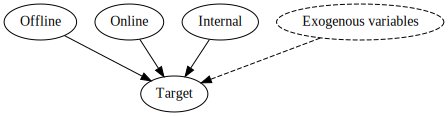
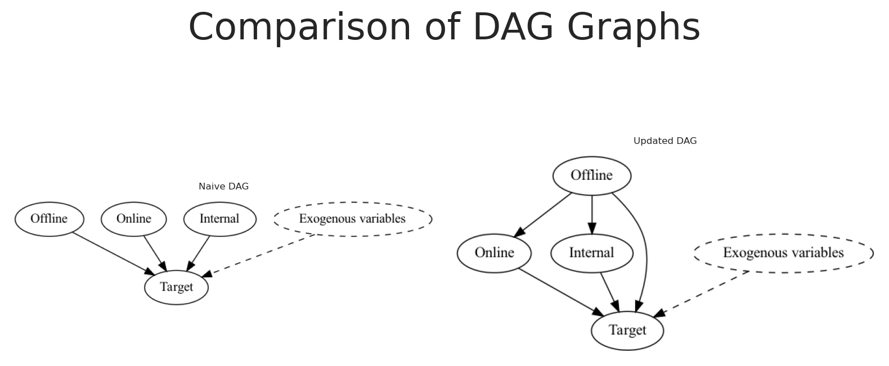
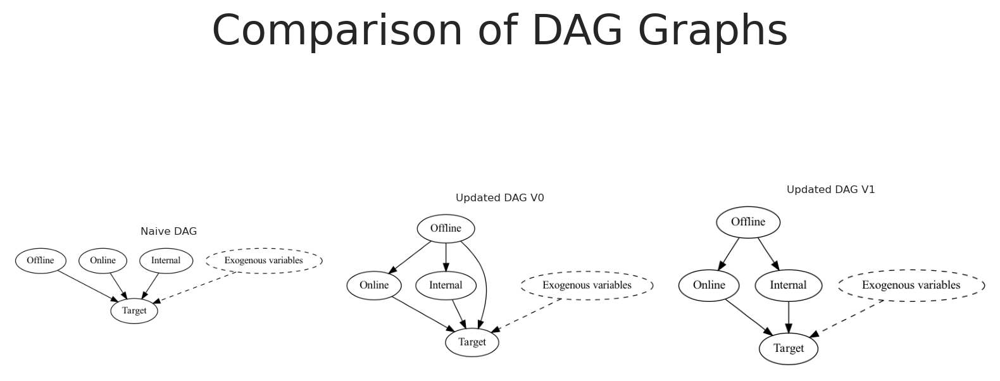

In this notebook, we’ll dive into how to uncover causal relationships in marketing data, a crucial step for understanding the true impact of various channels on business outcomes. We’ll start by generating synthetic data that mimics real-world marketing scenarios, complete with confounding variables and complex causal structures.
Next, we’ll fit a Bayesian marketing mix model using PyMC-Marketing, check causal directions between variables, and perform mediation analysis to explore indirect effects. Finally, we’ll use structure discovery techniques to infer potential causal graphs. By the end, you’ll have a solid grasp of how to apply these techniques to reveal hidden causal insights in your marketing data.
Code
import warningswarnings.filterwarnings("ignore")from pymc_marketing.mmm.transformers import geometric_adstock, michaelis_mentenfrom pymc_marketing.mmm import MMM, GeometricAdstock, MichaelisMentenSaturationfrom pymc_marketing.prior import Priorimport networkx as nxfrom graphviz import Digraphimport pydotimport arviz as azimport matplotlib.pyplot as pltimport matplotlib.image as mpimgimport seaborn as snsfrom IPython.display import SVG, displayimport numpy as npimport pandas as pdimport preliz as pzimport pymc as pmfrom PIL import Imagefrom io import BytesIOfrom causallearn.graph.Endpoint import Endpointfrom causallearn.utils.GraphUtils import GraphUtilsfrom causallearn.search.ScoreBased.GES import gesfrom causallearn.search.ConstraintBased.PC import pcaz.style.use("arviz-darkgrid")plt.rcParams["figure.figsize"] = [8, 4]plt.rcParams["figure.dpi"] =100plt.rcParams["axes.labelsize"] =6plt.rcParams["xtick.labelsize"] =6plt.rcParams["ytick.labelsize"] =6plt.rcParams.update({"figure.constrained_layout.use": True})%load_ext autoreload%autoreload 2%config InlineBackend.figure_format ="retina"seed =sum(map(ord, "Estimating effects despite having Confounding Variables"))rng = np.random.default_rng(seed)print(seed)print(rng)
5395
Generator(PCG64)
Business case
As a company we probably invest in different channels to acquire new customers. Some actions are more direct, like paid ads, and others are more indirect, like offline media marketing, as marketers and scientist, we want to understand the impact of each channel on the target variable (number of new customers).
The following DAG shows a possible causal structure of the problem. Let’s say we have the following variables:
\(x1\): offline ads, e.g. TV, radio, print, etc.
\(x2\): digital ads, e.g. SEM, SEO, social media, etc.
\(x3\): internal marketing, e.g. product marketing, internal communication, etc.
\(y\): new users
Its probable that our offline ads are not directly affecting our new users, but they are affecting our digital ads and internal marketing, users observe a banner of our product and then they search for it online or they are referred by a friend which finally converts using their phone. Independently, some digital ads can impact users which haven’t heard of us before, and those could convert directly.
On top of that, we have some external factors that could affect our new users, e.g. holidays, economic conditions, etc. Things like holidays could affect even more our digital ads, e.g. more users are online shopping, and we are investing more during those days as well.
This creates a complex causal structure, where variables are not fully independent and it is not easy to infer the causal impact of each channel on the target variable.
Based on the provided DAG, we can create some synthetic data to test how our model performs when we have a complex causal structures. Using the same data, we can test different model compositions and see how could we improve our model to uncover the true causal impact of each channel on the target variable.
We’ll start by setting the date range. Here we’ll use a date range from 2022-01-01 to 2024-11-06, meaning we have almost 3 years of data (1041 days).
Certain holidays, like Christmas, can have a significant impact on consumer behavior before and after the specific date, leading to seasonal spikes in sales. To capture these effects, we introduce a holiday signal based on Gaussian (normal) distributions centered around specific holiday dates.
The function used to model the holiday effect is defined as follows:
Where: - \(\Delta t\) is the time difference (in days) between the current date and the holiday date. - \(\sigma\) is the standard deviation that controls the spread of the effect around the holiday date.
For each holiday, we calculate the holiday signal across the date range and add a holiday contribution by scaling the signal with a holiday-specific coefficient. This approach models seasonal holiday spikes using Gaussian functions, which capture the transient increase in market activity around holidays, and their respective decay over time.
Note: Here we assume a normally distributed signal, nevertheless the signal could be skew or not normal distributed.
Code
holiday_dates = ["24-12", "31-12", "08-06", "07-09"] # List of holidays as month-day stringsstd_devs = [5, 5, 3, 3] # List of standard deviations for each holidayholidays_coefficients = [2, 3, 4, 6]# Initialize the holiday effect arrayholiday_signal = np.zeros(len(date_range))holiday_contributions = np.zeros(len(date_range))# Generate holiday signalsfor holiday, std_dev, holiday_coef inzip( holiday_dates, std_devs, holidays_coefficients, strict=False):# Find all occurrences of the holiday in the date range holiday_occurrences = date_range[date_range.strftime("%d-%m") == holiday]for occurrence in holiday_occurrences:# Calculate the time difference in days time_diff = (date_range - occurrence).days# Generate the Gaussian basis for the holiday _holiday_signal = np.exp(-0.5* (time_diff / std_dev) **2)# Add the holiday signal to the holiday effect holiday_signal += _holiday_signal holiday_contributions += _holiday_signal * holiday_coefdf["holiday_signal"] = holiday_signaldf["holiday_contributions"] = holiday_contributions# Plot the holiday effectfig, ax = plt.subplots()sns.lineplot(x=date_range, y=holiday_signal, ax=ax)ax.set(title="Holiday Effect Signal", xlabel="Date", ylabel="Signal Intensity")plt.show()
Generating inflation
Next, we generate the data for Inflation. We assume the inflation follows a power-law trend, meaning that growth accelerates over time rather than remaining constant. This can be mathematically defined as:
Where: - \(t\): The time index, representing days since the start of the date range. - \(baseline\): A constant added to \(t\) to shift the starting point of the trend. This value affects the initial level of market growth. The starting value of the function will be \((baseline)^{exponent} - 1\), not 0. - \(exponent\): The power to which the time index is raised, determining the rate at which the trend accelerates over time.
In this section, we simulate three marketing channels, \(x1\), \(x2\), and \(x3\) which represent different advertising channels (e.g., Internal Marketing, Social Marketing, Offline Marketing). Each channel’s behavior is influenced by random variability and confounding effects from seasonal holidays. Here’s how we model each channel mathematically:
Channel \(x1\): As mentioned before, we generate \(x1\) which is affected by the holiday signal, we could define it as:
\[
I_{x1_t} = S_{x1_t} + e_{x1}
\]
Channel \(x2\): On the other hand, we generate \(x2\) which is affected by the holiday signal, and the influence of \(x1\). We could define it as:
These equations allow us to capture the complex dynamics influencing each marketing channel: - Holiday Effects increase channel activity around specific dates, simulating seasonal spikes. - Cross-channel Influences introduce interdependencies, modeling how one channel’s success can amplify another’s.
Note: Here we are assuming an additive impact for the channel interactions.
We’ll assume all of marketing activities suffer the same transformations Adstock and Saturation. This means, each channel will have individual parameters for the selected transformations, in this case Geometrick adstock and michaelis menten.
Where: - Intercept: A baseline level of sales, set to 1.5, representing the base sales level in the absence of other effects. - Inflation: Represents the underlying market inflation, with an implicit negative coefficient of 1, adding a steady downward influence. - Holiday Contributions: Adds sales spikes around holiday periods, capturing the seasonal increase in consumer demand. - \(m(Impressions_{x3_t})\) and \(m(Impressions_{x2_t})\): Represent the saturated adstock values for the marketing channels \(x3\) and \(x2\). - Noise \(\epsilon\): A small random error term, drawn from a normal distribution with mean 0 and standard deviation 0.08, to account for unexplained variability in sales.
We can scale the full dataset and we’ll have finally something very similar to reality.
Code
# scale df by abs max per columndf["date"] = pd.to_datetime(df["date_week"])scaled_df = df.copy()for col in scaled_df.columns:if col !='date'and col !='date_week': scaled_df[col] = scaled_df[col] / scaled_df[col].abs().max()scaled_df[["date", "x1", "x2", "x3", "y"]].head()
date
x1
x2
x3
y
0
2022-01-01
0.311103
0.416608
0.709209
0.523628
1
2022-01-02
0.346200
0.417910
0.718519
0.641921
2
2022-01-03
0.310798
0.404066
0.690251
0.664626
3
2022-01-04
0.301643
0.395861
0.693495
0.672532
4
2022-01-05
0.248688
0.379114
0.679055
0.668596
Intial approach
If we have a dataset like the one we just created, we can try to fit a model with the following to find the causal impact of each channel on the target variable. For the example, we’ll use a simple model from Pymc-Marketing for this purpose.
Let’s see what happens if we fit a model with all what we have without any knowledge of the causal structure.
As anticipated, the model fails to accurately reflect the true contributions, resulting in estimates that significantly deviate from the actual values. How can this occur, and why is this happening?
The explanation is straightforward: by neglecting any causal structure, we inadvertently impose one onto the data. The issue lies in our assumption of the simplest causal framework, which rarely aligns with real-world complexity.
What kind of causal structure are we implicitly assuming when we fit the model?
Code
# Initialize a directed graphnaive_causal_mmm_graph = Digraph()# Add nodesnaive_causal_mmm_graph.node("X1", "Offline")naive_causal_mmm_graph.node("X2", "Online")naive_causal_mmm_graph.node("X3", "Internal")naive_causal_mmm_graph.node("E", "Exogenous variables", style="dashed")naive_causal_mmm_graph.node("T", "Target")naive_causal_mmm_graph.edge("E", "T", style="dashed")naive_causal_mmm_graph.edge("X1", "T")naive_causal_mmm_graph.edge("X2", "T")naive_causal_mmm_graph.edge("X3", "T")# Render the graph to SVG and display it inlinesvg_str = naive_causal_mmm_graph.pipe(format="svg")display(SVG(svg_str))

The DAG above represents the causal structure that we are implicitly assuming when we fit the model. Here all variables are independent of each other, and those impact directly the target variable.
During the model development, we established a specific structure and flow for our data. We concluded that the impacts of our channels operate independently of each other. Moreover, we determined that if any component of our ecosystem is missing, its influence will be accounted for by the baseline term due to this equation. As you can see, even by adopting this basic model, we are making significant assumptions.
On one hand, you are assuming that the impact is not linear by applying these transformations, and you are suggesting that the impact is positive and that there may be a maximum delay of a certain number of days.
You’ve even defined the direction of your relationships. By defining these relationships and assuming no direct causal connections between our variables, we can conclude that, if the nature of their relationship is accurately represented by the provided equation, then by controlling the relevant channels, we could uncover their true effects.
This leads us to which causal DAG we assume is correct, based on our previous assumptions. If you recognize this process, congratulations! You’ve created a generative model or Structural Causal Model, with a Structural Causal Equation, using PyMC-marketing.
However, this Causal DAG does not depict the true Causal DAG. Since our PyMC model is structural and causal, we must ask: What happens if I create a model with a different causal structure than the real one?
The answer is what we observed above, the model will not be able to recover the true causal structure.
Learning about generative models
Generative models are frameworks that describe how data could be produced in the real world. They outline a process by defining probability distributions for each component, simulating the creation of data from underlying random variables. This approach captures uncertainty and variability, providing a complete picture of the data generation mechanism.
In PyMC, this concept is at the core of every model. PyMC lets you explicitly define priors, likelihoods, and the structure of your data generation process. Even simple models built in PyMC carry an inherent generative assumption, making them flexible and robust in representing how data might naturally arise.
This means that each possible graph with N number of variables can be a specific model. How many models could we specify if we have 5 variables for one target?
Code
import mathfrom functools import lru_cache@lru_cache(maxsize=None)def dag_with_exactly_s_sources(n: int, s: int) ->int:""" Count DAGs with exactly s source nodes. Uses formula: S(n,s) = C(n,s) * sum[(-1)^j * C(n-s,j) * 2^((m-j)(m-j-1)/2) * (2^(m-j)-1)^s] where m=n-s and j=0..m. When n=s, S(n,n)=1. Parameters ---------- n : int Total number of labeled nodes s : int Number of source nodes Returns ------- int Number of possible DAGs """if n == s:return1 total =0 m = n - sfor j inrange(m +1): term = ( (-1) ** j* math.comb(m, j)*2** (((m - j) * (m - j -1)) //2)* (2** (m - j) -1) ** s ) total += termreturn math.comb(n, s) * totaldef count_valid_final_graphs_with_parents(num_regressors: int, num_parents: int) ->int:"""Count valid final graphs with parent node restrictions. The counting process has two main steps: 1. Build a DAG among regressors where parents have no incoming edges: - For non-parents (Q = num_regressors - num_parents), count DAGs with given sinks - Parents can only have edges to non-parents (Q options each) - Non-sink parents must have ≥1 outgoing edge (2^Q - 1 ways) - Sink parents have no edges (1 way) 2. Add edges from regressors to target: - Sink regressors must connect to target - Non-sink regressors optionally connect - Yields factor 2^(num_regressors - total_sinks) The total count formula is: sum_{s_p=0}^P sum_{s_q=1}^Q [binom(P,s_p) * (2^Q-1)^(P-s_p) * (DAGs_Q_s_q) * 2^((P+Q)-(s_p+s_q))] where P = num_parents, Q = num_regressors - num_parents When Q = 0 (all regressors are parents), the final graph is unique. Parameters ---------- num_regressors : int Total number of regressor nodes in the graph num_parents : int Number of designated parent nodes that cannot have incoming edges Returns ------- int Total count of valid final graph configurations """ P = num_parents Q = num_regressors - num_parents # non-parentsif Q <0:raiseValueError("num_parents cannot exceed num_regressors")# Case where all regressors are parents: no DAG edges are allowed;# every node is isolated (and hence a sink),# so the regressor-to-target assignment is forced.if Q ==0:return1 total =0# s_p: number of parents that end up as sinks# (i.e. with no outgoing edge to any non-parent)for s_p inrange(P +1):# For each parent:# - If not a sink: choose at least one outgoing edge# among Q non-parents: (2^Q - 1) ways.# - If a sink: only 1 way (choose no outgoing edge). parent_config = math.comb(P, s_p) * ((2**Q -1) ** (P - s_p))# s_q: number of sinks among non-parents in the DAG on Q nodes.# Note: Every DAG on at least one node has at least one sink.for s_q inrange(1, Q +1): nonparent_count = dag_with_exactly_s_sources(Q, s_q)# Total sinks in the regressor# DAG is s_p (from parents) plus s_q (from non-parents) total_sinks = s_p + s_q# For each regressor that is not a sink,# the regressor-to-target edge is optional.# Thus, a factor of 2^( (P+Q) - total_sinks ). assignment_factor =2** ((P + Q) - total_sinks) total += parent_config * nonparent_count * assignment_factorreturn totalpossible_dags = count_valid_final_graphs_with_parents(num_regressors=5, num_parents=2)print(f"Number of possible DAGs with two parents (Graphical/Generative Model): {possible_dags:,}")possible_dags = count_valid_final_graphs_with_parents(num_regressors=5, num_parents=1)print(f"Number of possible DAGs with one parent (Graphical/Generative Model): {possible_dags:,}")
Number of possible DAGs with two parents (Graphical/Generative Model): 12,375
Number of possible DAGs with one parent (Graphical/Generative Model): 52,855
The number of possible models we can generate with two out of five variables as parents is around 12,000, while having just one parent increases that number to approximately 52,000. Interestingly, removing a single parent node triples the potential models we can create, effectively multiplying the number of possible scenarios.
This sheds light on the challenges posed by large models:
a) As the number of variables increases, the exponential growth in potential relationships becomes overwhelming, making it difficult to pinpoint our actual situation.
b) With more variables, the likelihood of mistakenly controlling for the wrong variables also increases.
This latter point aligns with our earlier observation: if we control for inappropriate variables, the model fails to recover the true causal structure.
So, why is it problematic to control for certain variables? Every variable should add more explanatory power, no?. Let’s start learning about structures to understand.
Learning about causal structures
Forks: A fork is a causal structure where a single variable acts as a common cause for two or more other variables. This common cause transmits its influence to all its direct descendants. The existence of a fork creates confounding, making the relationship between the descendant variables appear related. Controlling for the common cause can effectively block the backdoor paths created by this structure.
Chains: A chain represents a sequential causal pathway where one variable influences another, which in turn affects a third variable. This structure highlights the mediation process through which causal effects are transmitted. The intermediate variable acts as a mediator, carrying the influence from the initial cause to the final outcome. Analyzing chains helps distinguish between direct and indirect effects in a causal system. Controlling for the mediator inappropriately may block parts of the causal effect that are of interest.
Colliders: A collider is a variable that is the common effect of two or more causal factors. It sits at the convergence of different causal paths and can introduce spurious associations when conditioned upon. Controlling for a collider can inadvertently open up non-causal, backdoor paths, leading to biased estimates. This phenomenon, known as collider bias, distorts the true relationships among the causal variables. Avoiding conditioning on colliders is crucial for maintaining the validity of causal models.
Causal structures play a crucial role in various causal inference methods, serving as the foundation for their functionality. For instance, chain structures are key to methods like instrumental variables (IV). In IV analysis, this chain structure comes into play by introducing an instrument—a variable that impacts the exposure but does not directly affect the outcome, except through that exposure. This approach helps break the confounding path, allowing us to isolate the exogenous variation in treatment.
As a result, it enables a consistent estimation of causal effects, even when we encounter endogeneity. Therefore, grasping chain structures is essential, as it not only supports the rationale behind IV methods but also underscores the significance of identifying valid instruments.
If you’re particularly interested in learning more about IVs, I recommend checking out a post by Anton Bugaev or heading to the fifth floor if you’re at Bolt.
Ultimately, each of these causal structures exhibits different observational behaviors. This means that based on the observational data, we can deduce which structure is present, and consecuently determinate whats the right variable set to control.
One thing to understand what to control is find out the parent nodes to avoid to control by mediators, we could identify this understanding the conditional dependencies.
Lets check conditional independencies
Conditional independence is a core concept in probability theory and statistics where two variables are independent of each other once a third variable is held constant. This means that, given the value of the conditioning variable, the two variables do not provide additional information about one another. In causal discovery, conditional independencies are crucial because they reveal the underlying structure of causal relationships in a model or a directed acyclic graph (DAG). By identifying these independencies, we can determine how variables are related to each other, or not.
Bayesian regression models allow us to estimate the conditional expectation of an outcome given a set of predictors, effectively uncovering the underlying conditional probabilities. In a bayesian linear regression, for example, we estimate \(E(Y \mid X) = \beta_0 + \beta_1X_1 + \ldots + \beta_kX_k\), which represents the average outcome \(Y\) when the predictors \(X_1, \dots, X_k\) are held at specific values.
Let’s define a function to build and sample a linear model from a formula.
Code
def build_and_sample_model(data: pd.DataFrame, formula: str):""" Build and sample a linear model from a formula. """# Parse the formula to get target and channels target, channels = formula.split('~') target = target.strip() channels = [ch.strip() for ch in channels.split('+') if ch.strip() !="1"]# Define coordinates coordinates = {"date": data.date.unique()}if channels: # If there are regressors, include them in coordinates coordinates["channel"] = channels# Filter the dataset based on the formulawith pm.Model(coords=coordinates) as linear_model:# Load Data in Model target_data = pm.Data("target", data[target].values, dims="date")# Constant or intercept intercept = pm.Gamma("intercept", mu=3, sigma=2) mu_var =0if channels: # If there are regressors, include them regressors = pm.Data("regressors", data[channels].values, dims=("date", "channel")) gamma = pm.Normal("gamma", mu=3, sigma=2, dims="channel") mu_var += (regressors * gamma).sum(axis=-1) + interceptelse: mu_var += intercept# Likelihood pm.Normal("likelihood", mu=mu_var, sigma=pm.Gamma("sigma", mu=2, sigma=3), observed=target_data, dims="date")# Sample idata = pm.sample_prior_predictive(random_seed=42) idata.extend( pm.sample(tune=1000, draws=500, chains=4, random_seed=42, target_accept=0.9, nuts_sampler="numpyro", progressbar=False) ) pm.compute_log_likelihood(idata, progressbar=False) idata.extend( pm.sample_posterior_predictive(idata, random_seed=42) )return (idata, linear_model)
Now, let’s build and sample the models for each variable.
In a causal system where the true direction is \(x_1\) to \(x_2\), the joint distribution factorizes as \[
P(x_1, x_2) = P(x_1) \, P(x_2 \mid x_1),
\]
where \(x_1\) is exogenous and independent of any effects. This structure reflects that \(x_1\)’s distribution remains unchanged regardless of the downstream variable \(x_2\).
When regressing \(x_2\) on \(x_1\), the model leverages the causal direction, and the conditional distribution \(P(x_2 \mid do(x_1))\) is more concentrated than the marginal \(P(x_2)\). This results in residuals that are centered around zero, indicating that most variability in \(x_2\) is explained by \(x_1\).
In contrast, reversing the regression by modeling \(x_1\) as a function of \(x_2\) disrupts the causal order. The conditional distribution \(P(x_1 \mid do(x2))\) deviates from the true marginal \(P(x_1)\), as it attempts to capture the cause from its effect, which is not supported by the causal structure.
The bias in the reverse regression arises because conditioning on \(x_2\) introduces variability from the noise inherent in \(x_2\). This misattribution conflates the independent variability of \(x_1\) with that induced by \(x_2\), leading to residuals that systematically deviate from zero. Respect to the null model, the residuals are further from zero.
This discrepancy underscores the importance of preserving the correct causal direction to avoid bias, as reversing the regression violates the causal Markov condition.
Using this logic, we can identify not only independent variables but also the candidate parents for each variable based on how they deviate from the null model.
Code
idata1, model1 = build_and_sample_model(scaled_df,"x2 ~ 1")idata2, model2 = build_and_sample_model(scaled_df,"x2 ~ x1 + 1")idata3, model3 = build_and_sample_model(scaled_df,"x2 ~ x3 + 1")idata4, model4 = build_and_sample_model(scaled_df,"x2 ~ x1 + x3 + 1")_real_mean = scaled_df["x2"].mean()_estimated_mean1 = idata1.posterior_predictive.likelihood.mean(dim=["date"]).values.flatten()_estimated_mean2 = idata2.posterior_predictive.likelihood.mean(dim=["date"]).values.flatten()_estimated_mean3 = idata3.posterior_predictive.likelihood.mean(dim=["date"]).values.flatten()#plot distribution of means and real mean as vertical linesns.kdeplot(_estimated_mean1 - _real_mean, label='Estimated Mean f(x2 ~ 1)', fill=True)sns.kdeplot(_estimated_mean2 - _real_mean, label='Estimated Mean f(x2 ~ x1 + 1)', fill=True)sns.kdeplot(_estimated_mean3 - _real_mean, label='Estimated Mean f(x2 ~ x3 + 1)', fill=True)plt.axvline(0, color='red', linestyle='--', label='Zero')plt.legend()plt.show()
Sampling: [gamma, intercept, likelihood, sigma]
The rhat statistic is larger than 1.01 for some parameters. This indicates problems during sampling. See https://arxiv.org/abs/1903.08008 for details
Sampling: [likelihood]
Here we can see that the residuals are centered around zero when we regress the marginal probability of \(x_2\), but they are closer to zero with a probability distribution narrower than the null model when we regress \(x_2\) on \(x_1\). This is a good sign that \(x_1\) is a parent of \(x_2\).
We can repeat this process for all the variables in our dataset to start to identify the parents of each variable, and thus identifying sections of the true causal graph.
Let’s implement this in code.
Identifying Parent Candidates
To systematically identify potential parent variables in our causal graph, we’ll create a class that evaluates different regression models and compares their residual distributions. This approach leverages the principle that when we correctly model the causal direction, residuals should be more tightly centered around zero compared to misspecified models.
Warning
While this approach provides a good initial signal for causal relationships, it has limitations. The method assumes linear relationships, doesn’t account for hidden confounders, and may struggle with complex causal structures. Results should be considered as preliminary evidence rather than definitive proof of causal relationships.
The ParentCandidateIdentifier class below will: 1. Run a baseline model with only an intercept 2. Run models with each potential parent variable 3. Compare how much probability mass is concentrated near zero in the residual distributions 4. Identify variables that improve the model fit as potential parent candidates
Code
class ParentCandidateIdentifier:def__init__(self, data: pd.DataFrame, node: str, possible_parents: list, epsilon: float=0.005):""" Parameters: data: DataFrame containing your data. node: The target variable for which to identify candidate parents. possible_parents: A list of potential parent variable names. epsilon: Threshold to define "mass around zero" (default 0.05). """self.data = dataself.node = nodeself.possible_parents = possible_parentsself.epsilon = epsilonself.runs = {}self.results =Nonedef build_and_sample_model(self, formula: str):"""Wrapper for the sampling function."""return build_and_sample_model(self.data, formula)def compute_mass_around_zero(self, idata, real_mean):""" Compute the fraction of posterior predictive likelihood samples (averaged over dates) within epsilon of the real mean. """ estimated_mean = idata.posterior_predictive.likelihood.mean(dim=["date"]).values.flatten() distribution = estimated_mean - real_mean mass = np.mean(np.abs(distribution) <self.epsilon)return mass, distributiondef run_all_models(self):""" Run the intercept-only model and each individual parent's model, storing the sampling results, mass, and error distributions. """ real_mean =self.data[self.node].mean() runs = {}# Intercept-only model: P(node) formula_intercept =f"{self.node} ~ 1" idata_int, _ =self.build_and_sample_model(formula_intercept) mass_int, dist_int =self.compute_mass_around_zero(idata_int, real_mean) runs["intercept_only"] = {"formula": formula_intercept,"idata": idata_int,"mass": mass_int,"distribution": dist_int }# Individual candidate parent models: P(node|parent)for parent inself.possible_parents: formula_parent =f"{self.node} ~ {parent} + 1" idata_parent, _ =self.build_and_sample_model(formula_parent) mass_parent, dist_parent =self.compute_mass_around_zero(idata_parent, real_mean) runs[f"parent_{parent}"] = {"formula": formula_parent,"idata": idata_parent,"mass": mass_parent,"distribution": dist_parent }self.runs = runsreturn runsdef identify_candidate_parents(self):""" Runs all models (if not already run), compares the mass around zero, and returns a decision: if the intercept-only model is best, the target is independent; otherwise, return the candidate parent with the highest mass. """ifnotself.runs:self.run_all_models() best_key, best_info =max(self.runs.items(), key=lambda x: x[1]["mass"])if best_key =="intercept_only": decision ="independent" candidate_parents = []else: decision ="dependent" candidate_parents = [best_key.split("_", 1)[1]]self.results = {"results": self.runs,"best_model": {best_key: best_info},"decision": decision,"candidate_parents": candidate_parents }returnself.resultsdef plot_distributions(self):""" Plot the error distributions from the stored runs using Seaborn. """ifnotself.runs:self.run_all_models()for key, run inself.runs.items(): sns.kdeplot(run["distribution"], label=run["formula"], fill=True) plt.axvline(0, color='red', linestyle='--', label='Zero Error') plt.xlabel("Error (Estimated Mean - Real Mean)") plt.ylabel("Density") plt.title("Posterior Predictive Error Distributions") plt.legend() plt.show()
Now we can identify the candidate parents for each variable..
Sampling: [gamma, intercept, likelihood, sigma]
The rhat statistic is larger than 1.01 for some parameters. This indicates problems during sampling. See https://arxiv.org/abs/1903.08008 for details
Sampling: [likelihood]
Possible parents: ['x1']
Understanding the conditional independencies of the variables in our dataset allows us to identify the parents of each variable. Currently, we have identified that \(x_3\) and \(x_2\) are children of \(x_1\), and \(x_1\) is independent or truly exogenous.
We can now use this information to update our causal graph.
Code
# Initialize a directed graphupdated_naive_causal_mmm_graph = Digraph()# Add nodesupdated_naive_causal_mmm_graph.node("X1", "Offline")updated_naive_causal_mmm_graph.node("X2", "Online")updated_naive_causal_mmm_graph.node("X3", "Internal")updated_naive_causal_mmm_graph.node("E", "Exogenous variables", style="dashed")updated_naive_causal_mmm_graph.node("T", "Target")updated_naive_causal_mmm_graph.edge("E", "T", style="dashed")updated_naive_causal_mmm_graph.edge("X1", "T")updated_naive_causal_mmm_graph.edge("X1","X2")updated_naive_causal_mmm_graph.edge("X1","X3")updated_naive_causal_mmm_graph.edge("X2", "T")updated_naive_causal_mmm_graph.edge("X3", "T")# Create a figure with five subplotsfig, axes = plt.subplots(1, 2,)# Set titles for each subplottitles = ["Naive DAG", "Updated DAG"]for ax, title inzip(axes, titles): ax.set_title(title, fontsize=6) ax.axis('off')# Render and plot each graphnaive_causal_mmm_graph.render(format='png', filename='images/naive_dag')axes[0].imshow(mpimg.imread('images/naive_dag.png'))updated_naive_causal_mmm_graph.render(format='png', filename='images/updated_dag')axes[1].imshow(mpimg.imread('images/updated_dag.png'))# Add main titleplt.suptitle("Comparison of DAG Graphs", fontsize=24)plt.tight_layout()

Great, we can update our model of the world to include the causal relationships we have identified. How else can we use this information to learn more about the causal relationships in our dataset?
Mediation analysis for the causal discovery
In mediation analysis, the total effect of a predictor \(X1\) on a target \(T\) is decomposed into direct and indirect components. The indirect effect operates through a mediator \(M\), modeled as \(M = \alpha_m + a \times X1 + \text{error}\). Simultaneously, the outcome is modeled as \(T = \alpha_y + c' \times X1 + b \times M + \text{error}\). Here, the product \(a \times b\) quantifies the indirect effect, while \(c'\) represents the direct effect of \(X1\) on \(T\). By estimating these coefficients, we can assess whether the influence of \(X1\) on \(T\) is transmitted via \(M\), entirely direct, or a combination of both. Statistical inference is performed using credible intervals, where intervals excluding zero indicate significant effects.
If the indirect effect \(a \times b\) is significant and the direct effect \(c'\) is not, we conclude that \(X1\)’s impact on \(T\) is fully mediated by \(M\). Conversely, significant values for both \(a \times b\) and \(c'\) suggest that \(X1\) exerts both direct and indirect influences on \(T\).
In simple terms, mediation analysis helps us determine whether a predictor \(X1\) influences an outcome \(T\) directly or mainly by first affecting a mediator \(M\), which then impacts \(T\). If the mediator’s effect is significant while the direct effect is not, it suggests that \(X1\) affects \(T\) primarily through its influence on \(M\).
Why do this on top of the causal discovery we have already done? The reason is that we can use the mediation analysis to verify the causal relationships we have identified, becuase if a node is parent the other then some effect is mediated, if we can detect that mediation, then we can decide if the causal relationship is direct or indirect. If we fail to detect mediation, then probably our findings are not robust to the causal discovery we have done.
Code
class MediationAnalysis:""" A class for performing Bayesian mediation analysis using a joint mediation model. The model is specified as: Mediator: M = α_m + a * X + error Outcome: Y = α_y + c′ * X + b * M + error Derived parameters: - Indirect effect: ab = a * b - Total effect: c = c′ + (a * b) Parameters ---------- data : pd.DataFrame DataFrame containing the predictor, mediator, and outcome variables. x : str Column name for the predictor (X). m : str Column name for the mediator (M). y : str Column name for the outcome (Y). hdi : float, optional Credible interval width for HDI (default 0.95). sampler_kwargs : dict, optional Additional keyword arguments for the sampler. Default: {"tune": 1000, "draws": 500, "chains": 4, "random_seed": 42, "target_accept": 0.9, "nuts_sampler": "numpyro", "progressbar": False} """def__init__(self, data: pd.DataFrame, x: str, m: str, y: str, hdi: float=0.95, sampler_kwargs: dict=None):self.data = dataself.x = xself.m = mself.y = yself.hdi = hdiself.sampler_kwargs = sampler_kwargs or {"tune": 1000,"draws": 500,"chains": 4,"random_seed": 42,"target_accept": 0.9,"nuts_sampler": "numpyro","progressbar": False }self.idata =Noneself.model =Nonedef build_model(self):""" Build the Bayesian mediation model. This method constructs the PyMC model and stores it in self.model. Returns ------- model : pm.Model The constructed PyMC model. """# Extract data arrays X_data =self.data[self.x].values M_data =self.data[self.m].values Y_data =self.data[self.y].values N =len(self.data) coords = {"obs": range(N)}with pm.Model(coords=coords) as model:# Mediator path: M = α_m + a * X + error alpha_m = pm.Normal("alpha_m", mu=0.0, sigma=1.0) a = pm.Normal("a", mu=0.0, sigma=1.0) sigma_m = pm.Exponential("sigma_m", lam=1.0) mu_m = alpha_m + a * X_data pm.Normal("M_obs", mu=mu_m, sigma=sigma_m, observed=M_data, dims="obs")# Outcome path: Y = α_y + c′ * X + b * M + error alpha_y = pm.Normal("alpha_y", mu=0.0, sigma=1.0) c_prime = pm.Normal("c_prime", mu=0.0, sigma=1.0) b = pm.Normal("b", mu=0.0, sigma=1.0) sigma_y = pm.Exponential("sigma_y", lam=1.0) mu_y = alpha_y + c_prime * X_data + b * M_data pm.Normal("Y_obs", mu=mu_y, sigma=sigma_y, observed=Y_data, dims="obs")# Derived parameters: indirect and total effects pm.Deterministic("ab", a * b) pm.Deterministic("c", c_prime + a * b)self.model = modeldef fit(self):""" Sample from the previously built mediation model. Returns ------- self : MediationAnalysis The fitted mediation analysis object. Raises ------ ValueError If the model has not been built yet. """ifself.model isNone:raiseValueError("The model has not been built. Call build_model() before fit().")withself.model:self.idata = pm.sample(**self.sampler_kwargs)def get_summary(self):""" Get a numerical summary of the mediation parameters. Returns ------- dict Dictionary with mean estimates and HDI bounds for each parameter. """ var_names = ["alpha_m", "a", "alpha_y", "c_prime", "b", "ab", "c"] summary_df = az.summary(self.idata, var_names=var_names, hdi_prob=self.hdi)# Compute the HDI column names based on the specified interval lower_percent = (1-self.hdi) /2*100 upper_percent =100- lower_percent lower_col =f"hdi_{lower_percent:.1f}%" upper_col =f"hdi_{upper_percent:.1f}%" results = {}for key in var_names: results[key] = {"mean": summary_df.loc[key, "mean"],"hdi_lower": summary_df.loc[key, lower_col],"hdi_upper": summary_df.loc[key, upper_col] }return resultsdef get_report(self, x_label: str=None, m_label: str=None, y_label: str=None):""" Generate a plain-language report of the mediation analysis results. Parameters ---------- x_label : str, optional Label for the predictor variable (default uses self.x). m_label : str, optional Label for the mediator variable (default uses self.m). y_label : str, optional Label for the outcome variable (default uses self.y). Returns ------- str A human-readable summary of the mediation effects. """# Use provided labels or default to variable names x_label = x_label orself.x m_label = m_label orself.m y_label = y_label orself.y var_names = ["a", "b", "c_prime", "ab", "c"] summary_df = az.summary(self.idata, var_names=var_names, hdi_prob=self.hdi)def hdi_includes_zero(row): lower_percent = (1-self.hdi) /2*100 upper_percent =100- lower_percent lower_col =f"hdi_{lower_percent:.1f}%" upper_col =f"hdi_{upper_percent:.1f}%"return row[lower_col] <=0<= row[upper_col]# Extract summary statistics a_stats = summary_df.loc["a"] b_stats = summary_df.loc["b"] c_prime_stats = summary_df.loc["c_prime"] ab_stats = summary_df.loc["ab"] c_stats = summary_df.loc["c"] a_mean = a_stats["mean"] b_mean = b_stats["mean"] c_prime_mean = c_prime_stats["mean"] ab_mean = ab_stats["mean"] c_mean = c_stats["mean"] a_zero = hdi_includes_zero(a_stats) b_zero = hdi_includes_zero(b_stats) c_prime_zero = hdi_includes_zero(c_prime_stats) ab_zero = hdi_includes_zero(ab_stats) c_zero = hdi_includes_zero(c_stats) lines = [] lines.append(f"**Bayesian Mediation Analysis Overview** ({int(self.hdi *100)}% HDI)") lines.append(f"Variables: {x_label} (predictor), {m_label} (mediator), {y_label} (outcome).")# Interpret each pathifnot a_zero: direction ="positive"if a_mean >0else"negative" lines.append(f"- Path a ({x_label} → {m_label}) is credibly {direction} (mean = {a_mean:.3f}).")else: lines.append(f"- Path a ({x_label} → {m_label}) is weak (HDI includes 0, mean = {a_mean:.3f}).")ifnot b_zero: direction ="positive"if b_mean >0else"negative" lines.append(f"- Path b ({m_label} → {y_label}, controlling for {x_label}) is credibly {direction} (mean = {b_mean:.3f}).")else: lines.append(f"- Path b ({m_label} → {y_label}, controlling for {x_label}) is weak (HDI includes 0, mean = {b_mean:.3f}).")ifnot ab_zero: direction ="positive"if ab_mean >0else"negative" lines.append(f"- Indirect effect (a×b) is credibly {direction} (mean = {ab_mean:.3f}).")else: lines.append(f"- Indirect effect (a×b) is uncertain (HDI includes 0, mean = {ab_mean:.3f}).")ifnot c_prime_zero: direction ="positive"if c_prime_mean >0else"negative" lines.append(f"- Direct effect (c') is credibly {direction} (mean = {c_prime_mean:.3f}).")else: lines.append(f"- Direct effect (c') is near zero (HDI includes 0, mean = {c_prime_mean:.3f}).")ifnot c_zero: direction ="positive"if c_mean >0else"negative" lines.append(f"- Total effect (c) is credibly {direction} (mean = {c_mean:.3f}).")else: lines.append(f"- Total effect (c) is uncertain (HDI includes 0, mean = {c_mean:.3f}).") lines.append("")ifnot ab_zero and c_prime_zero: lines.append(f"It appears that {m_label} fully mediates the effect of {x_label} on {y_label} (indirect effect is non-zero while direct effect is near zero).")elifnot ab_zero andnot c_prime_zero: lines.append(f"It appears that {m_label} partially mediates the effect of {x_label} on {y_label} (both indirect and direct effects are credibly non-zero).")else: lines.append("Mediation is unclear or absent (the indirect effect includes zero or the total effect is not clearly different from zero).")return"\n".join(lines)
Let’s run the mediation analysis for the first two variables.
**Bayesian Mediation Analysis Overview** (95% HDI)
Variables: x1 (predictor), x2 (mediator), y (outcome).
- Path a (x1 → x2) is credibly positive (mean = 0.411).
- Path b (x2 → y, controlling for x1) is credibly positive (mean = 0.627).
- Indirect effect (a×b) is credibly positive (mean = 0.258).
- Direct effect (c') is near zero (HDI includes 0, mean = 0.007).
- Total effect (c) is credibly positive (mean = 0.264).
It appears that x2 fully mediates the effect of x1 on y (indirect effect is non-zero while direct effect is near zero).
**Bayesian Mediation Analysis Overview** (95% HDI)
Variables: x1 (predictor), x3 (mediator), y (outcome).
- Path a (x1 → x3) is credibly positive (mean = 0.390).
- Path b (x3 → y, controlling for x1) is credibly positive (mean = 0.358).
- Indirect effect (a×b) is credibly positive (mean = 0.140).
- Direct effect (c') is credibly positive (mean = 0.125).
- Total effect (c) is credibly positive (mean = 0.265).
It appears that x3 partially mediates the effect of x1 on y (both indirect and direct effects are credibly non-zero).
Great 👏🏻 Based on the following results we can conclude that \(x_1\) affects \(y\) through \(x_2\) and \(x_3\) but not directly. This conclusion is based on the indirect effect being significant and the direct effect being near zero when controlling for the mediator \(x2\) and partial for \(x3\).
If both factor were present, the indirect effect would be stronger, given the previous results. So, for simplicity, we’ll not test the mediation when both factors are present.
We can again, update our causal graph to reflect the new findings.
Code
# Initialize a directed graphupdated_naive_causal_mmm_graph1 = Digraph()# Add nodesupdated_naive_causal_mmm_graph1.node("X1", "Offline")updated_naive_causal_mmm_graph1.node("X2", "Online")updated_naive_causal_mmm_graph1.node("X3", "Internal")updated_naive_causal_mmm_graph1.node("E", "Exogenous variables", style="dashed")updated_naive_causal_mmm_graph1.node("T", "Target")updated_naive_causal_mmm_graph1.edge("E", "T", style="dashed")updated_naive_causal_mmm_graph1.edge("X1","X2")updated_naive_causal_mmm_graph1.edge("X1","X3")updated_naive_causal_mmm_graph1.edge("X2", "T")updated_naive_causal_mmm_graph1.edge("X3", "T")# Create a figure with five subplotsfig, axes = plt.subplots(1, 3,)# Set titles for each subplottitles = ["Naive DAG", "Updated DAG V0", "Updated DAG V1"]for ax, title inzip(axes, titles): ax.set_title(title, fontsize=6) ax.axis('off')# Render and plot each graphnaive_causal_mmm_graph.render(format='png', filename='images/naive_dag')axes[0].imshow(mpimg.imread('images/naive_dag.png'))updated_naive_causal_mmm_graph.render(format='png', filename='images/updated_dag')axes[1].imshow(mpimg.imread('images/updated_dag.png'))updated_naive_causal_mmm_graph1.render(format='png', filename='images/updated_dag1')axes[2].imshow(mpimg.imread('images/updated_dag1.png'))# Add main titleplt.suptitle("Comparison of DAG Graphs", fontsize=24)plt.tight_layout()

This is great! Our new causal graph is more complex, but it is more accurate to the one defined before. Nevertheless, we need a significant amount of time, and manual work to arrive to this conclusion.
How could we automate this process? It’s even possible? and how this would solve the intial problem?
Yes, it is possible! We can use causal discovery algorithms to automate this process.
Introduction to causal discovery
Causal discovery infers directional cause-and-effect relationships from observational data. It uses computational algorithms to construct directed acyclic graphs that represent potential causal mechanisms. These techniques are based on the causal Markov condition and the assumption of statistical faithfulness. They employ statistical tests for conditional independence to differentiate direct influences from indirect associations. This approach integrates statistical inference and graph theory to model complex systems. Overall, it uncovers hidden causal structures that enhance our understanding and estimations of dynamic phenomena.
Causal Markov Assumption: Each variable is independent of its non-effects given its direct causes, meaning that the joint probability distribution can be factorized according to the directed acyclic graph structure. This implies that once you condition on a variable’s immediate causes, any further upstream or parallel influences are rendered statistically irrelevant.
Statistical Faithfulness: This assumption posits that all and only the conditional independence relations observed in the data are those implied by the causal graph. In other words, there are no accidental cancellations or coincidental independencies beyond what the causal structure predicts.
Code
class CausalDiscovery:def__init__(self, data):self.data = dataself.labels = [f'{col}'for col in data.columns.to_list()]def greedy_search(self, **kwargs): result = ges(X=self.data.to_numpy(), **kwargs)return result["G"]def peter_clark(self, **kwargs): result = pc(self.data.to_numpy(), **kwargs)return result.Gdef to_pydot(self, graph):return GraphUtils.to_pydot(graph, labels=self.labels)def to_dict(self, graph):""" Convert a general graph to a dictionary representation where each node is a key and the value is a list of its descendants. Parameters ---------- graph : causallearn.graph.GeneralGraph.GeneralGraph The input graph. Returns ------- dict A dictionary where keys are node labels and values are lists of descendant node labels. """ result = {} nodes =sorted(graph.get_nodes(), key=lambda x: str(x))# Initialize the dictionary with empty lists for all nodesfor i, node inenumerate(nodes): result[self.labels[i]] = []# For each node, find its children (direct descendants)for i, node inenumerate(nodes): node_label =self.labels[i]for j, potential_child inenumerate(nodes):if i != j and graph.get_edge(node, potential_child) isnotNone:# Check if there's a directed edge from node to potential_child edge = graph.get_edge(node, potential_child)if (edge.get_endpoint1() == Endpoint.TAIL and edge.get_endpoint2() == Endpoint.ARROW): result[node_label].append(self.labels[j])return resultdef to_graphviz(self, graph, handle_circle="skip"):""" Convert a general graph into a Graphviz Digraph using the pydot conversion for nodes while preserving the original directed edge ordering. Only if the original graph indicates that an edge is undirected (both endpoints are TAIL) do we override the arrow style (using dir="none"). Otherwise, we leave the pydot-provided direction unchanged. Parameters ---------- graph : causallearn.graph.GeneralGraph.GeneralGraph The input graph. handle_circle : str, optional How to handle circle endpoints (not used explicitly here but available for future logic). Returns ------- graphviz.Digraph A Graphviz Digraph where undirected edges are rendered without arrowheads. """# Get the pydot graph (for node positions/labels) dot =self.to_pydot(graph) digraph = Digraph() digraph.attr(size='8,8')# Build a mapping of the original graph nodes based on sorted order. original_nodes =sorted(graph.get_nodes(), key=lambda x: str(x))# Map string indices ("0", "1", …) to the original nodes. index_to_node = {str(i): node for i, node inenumerate(original_nodes)}# Map indices to labels using self.labels. node_labels = {str(i): self.labels[i] for i inrange(len(original_nodes))}# Add nodes to the Graphviz Digraph.for idx_str, label in node_labels.items(): digraph.node(label)# Process each edge from the pydot graph. processed =set() pydot_edges = dot.get_edges()for edge in pydot_edges:# Get source and destination from pydot. src_raw = edge.get_source() dst_raw = edge.get_destination() src_str = src_raw.strip('"') ifisinstance(src_raw, str) elsestr(src_raw) dst_str = dst_raw.strip('"') ifisinstance(dst_raw, str) elsestr(dst_raw)# Get original node objects using our mapping. src_node = index_to_node.get(src_str) dst_node = index_to_node.get(dst_str)if src_node isNoneor dst_node isNone:continue# Get display labels. src_label = node_labels.get(src_str, src_str) dst_label = node_labels.get(dst_str, dst_str)# Use a tuple (src_str, dst_str) to ensure we don't add duplicates. edge_key = (src_str, dst_str) reverse_key = (dst_str, src_str)if edge_key in processed or reverse_key in processed:continuetry:# Get endpoint information from the original graph. e_uv = graph.get_endpoint(src_node, dst_node) e_vu = graph.get_endpoint(dst_node, src_node)exceptKeyError:# Skip if the original graph doesn't contain this edge.continue# If both endpoints are TAIL, we treat the edge as undirected.if e_uv == Endpoint.TAIL and e_vu == Endpoint.TAIL: digraph.edge(src_label, dst_label, dir="none") processed.add(edge_key) processed.add(reverse_key)else:# Otherwise, preserve the original pydot direction. digraph.edge(src_label, dst_label) processed.add(edge_key)return digraphdef to_networkx(self, graph) -> nx.DiGraph:""" Convert a general graph (e.g. from causallearn) into a NetworkX DiGraph. Nodes are added as provided by graph.get_nodes(), and for each ordered pair (u, v) where an edge exists (as determined by graph.get_endpoint(u, v)), we add a directed edge with an attribute 'endpoint' that stores the edge marker. If the general graph does not provide a direct list of edges (e.g. via a get_edges() method), we iterate over all pairs of nodes. """ digraph = nx.DiGraph() nodes = graph.get_nodes()# Add nodes to the networkx graph.for node in nodes: digraph.add_node(node)# If available, use a dedicated method to get edges.try: edges = graph.get_edges()exceptAttributeError:# Fallback: iterate over all ordered pairs (inefficient for large graphs) edges = []for u in nodes:for v in nodes:if u == v:continuetry:# Attempt to get an endpoint; if present, we consider that an edge exists. _ = graph.get_endpoint(u, v) edges.append((u, v))exceptKeyError:continue# Add edges with endpoint attributes.for u, v in edges:try: endpoint_uv = graph.get_endpoint(u, v)exceptKeyError:continue digraph.add_edge(u, v, endpoint=endpoint_uv)return digraphdef _networkx_to_graphviz(self, nx_graph: nx.DiGraph) -> Digraph:""" Convert a NetworkX DiGraph into a Graphviz Digraph. This method uses similar logic to 'to_graphviz', checking for reciprocal edges. If an edge (u,v) and its reverse (v,u) exist and both have the attribute endpoint equal to Endpoint.TAIL, the edge is rendered as undirected (dir="none"). """ digraph = Digraph() digraph.attr(size='8,8') processed =set()# Sort nodes to create a consistent mapping with self.labels. sorted_nodes =sorted(nx_graph.nodes(), key=lambda x: str(x)) node_labels = {}for i, node inenumerate(sorted_nodes):# Use self.labels if available, otherwise default to the node's string representation. label =self.labels[i] if i <len(self.labels) elsestr(node) node_labels[node] = label digraph.node(label)for u, v in nx_graph.edges():if (u, v) in processed or (v, u) in processed:continue src_label = node_labels.get(u, str(u)) dst_label = node_labels.get(v, str(v))# Check if the reverse edge exists to potentially mark as undirected.if nx_graph.has_edge(v, u): endpoint_uv = nx_graph.edges[u, v].get('endpoint', None) endpoint_vu = nx_graph.edges[v, u].get('endpoint', None)if endpoint_uv == Endpoint.TAIL and endpoint_vu == Endpoint.TAIL: digraph.edge(src_label, dst_label, dir="none") processed.add((u, v)) processed.add((v, u))continue# Otherwise, add the edge as directed. digraph.edge(src_label, dst_label) processed.add((u, v))return digraphdef _graphviz_to_networkx(self, gv_graph: Digraph) -> nx.DiGraph:""" Convert a Graphviz Digraph into a NetworkX DiGraph. This method extracts the DOT source from the provided Graphviz Digraph, parses it using pydot, and then converts the resulting pydot graph into a NetworkX directed graph. This ensures that node labels and edge orientations are maintained consistently. Parameters ---------- gv_graph : graphviz.Digraph The Graphviz Digraph to be converted. Returns ------- nx.DiGraph A NetworkX DiGraph representation of the input Graphviz graph. """# Retrieve the DOT source code from the Graphviz Digraph. dot_str = gv_graph.source# Parse the DOT data using pydot. pydot_graphs = pydot.graph_from_dot_data(dot_str)ifnot pydot_graphs:raiseValueError("No valid pydot graphs could be parsed from the DOT data.")# pydot.graph_from_dot_data returns a list; we take the first one. pydot_graph = pydot_graphs[0]# Use NetworkX’s built-in conversion from a pydot graph to a DiGraph. nx_graph = nx.nx_pydot.from_pydot(pydot_graph)return nx_graph
Causal Learn allows use to use different algorithms to infer the markov equivalent class of the causal graph. The previous class is a wrapper that allows us to use the different algorithms implemented in the causal learn library, and plot them more easily.
Currently we wrap the following algorithms:
Greedy Search (GES)
Peter-Clark (PC)
Causal Discovery Algorithms
The Peter-Clark algorithm is a constraint-based method that infers causal structures from observational data using conditional independence tests. It starts with a fully connected undirected graph where every variable is initially connected to every other variable. The algorithm systematically tests conditional independence between pairs of variables, conditioning on increasingly larger subsets of other variables. When a conditional independence is detected, the corresponding edge is removed from the graph.
On the other hand, Greedy Search is a score-based method that iteratively improves a candidate causal model by locally modifying its structure. It begins with an initial directed acyclic graph and evaluates a scoring metric that balances goodness-of-fit with model complexity. The algorithm explores modifications such as adding, deleting, or reversing edges to find local improvements in the score. At each iteration, it selects the change that produces the highest increase in the score, following a step-by-step improvement strategy. The search continues until no single modification can further enhance the model’s score. This method efficiently navigates the combinatorial search space of possible graphs by making locally optimal choices.
Causal Sufficiency Assumption
Any causal discovery algorithm is based on the assumption that all the relevant variables are observed. If some relevant variable is not observed, the algorithm will not be able to infer the correct causal graph. Each variable, even the unobserved ones, should be represented in the dataset, so the algorithm can include them in the causal graph and validation tests.
The following example shows the causal graph inferred using the Greedy Search algorithm.
Code
causal_model = CausalDiscovery(scaled_df[["holiday_signal", "inflation", "x1", "x2", "x3", "y"]])ges_graph = causal_model.greedy_search()# Create a figure with five subplotsfig, axes = plt.subplots(1, 4,)# Set titles for each subplottitles = ["Naive DAG", "Updated DAG", "Updated DAG 1", "Discovered DAG"]for ax, title inzip(axes, titles): ax.set_title(title, fontsize=6) ax.axis('off')# Render and plot each graphnaive_causal_mmm_graph.render(format='png', filename='images/naive_dag')axes[0].imshow(mpimg.imread('images/naive_dag.png'))updated_naive_causal_mmm_graph.render(format='png', filename='images/updated_dag')axes[1].imshow(mpimg.imread('images/updated_dag.png'))updated_naive_causal_mmm_graph1.render(format='png', filename='images/updated_dag1')axes[2].imshow(mpimg.imread('images/updated_dag1.png'))real_dag_graph = causal_model.to_graphviz(ges_graph)real_dag_graph.render(format='png', filename='images/discovered_dag')axes[3].imshow(mpimg.imread('images/discovered_dag.png'))# Add main titleplt.suptitle("Comparison of DAG Graphs", fontsize=24)plt.tight_layout()
The causal graph capture by greedy search is very similar to the true causal graph. Some arrows are directed to variables that are not related, but this is expected given the nature of the data, we still have noise in the data, and sporious correlations that can’t be fully falsify by the independence tests. Additionally, the finded graph can lie in the markov equivalence class of the true causal graph, meaning that there are multiple DAGs that are compatible with the data.
This instead of being a problem, is a great news because we can now start to work with experimentation to test the current structure, and improve it iteratively, without the need to wait for these answers to get the right estimates in a regression model.
Let’s break down the causal paths from x2 to y in the graph:
Confounding paths:
Holiday: Affects both x2 and y (holiday → x2 and holiday → y).
Inflation: Affects both x2 and y (inflation → x2 and inflation → y).
x1: Influences x2 (x1 → x2) and also affects y indirectly through x3 (x1 → x3 → y).
Mediating path:
x3: Lies on the causal pathway from x2 to y (x2 → x3 → y).
What needs to be controlled?
To estimate the total effect of x2 on y without bias, you need to block all backdoor (confounding) paths. This means controlling for the common causes:
Holiday
Inflation
x1
Why not control for x3? Since x3 is a mediator (i.e., it transmits part of the effect of x2 to y), including it in your regression would block the indirect effect of x2 on y. This “over-control” would result in an estimate that reflects only the direct effect of x2 on y, not the total effect. Additionally, controlling for mediators can sometimes introduce bias if there are other complex relationships in the graph.
There were 79 divergences after tuning. Increase `target_accept` or reparameterize.
Sampling: [y]
Now let’s plot the posterior distribution of the effect of x3 on y.
Code
def plot_posterior(y_real, posterior, figsize=(8, 4), path_color='orange', hist_color='orange', **kwargs):""" Plot the posterior distribution of a stochastic process. Parameters ---------- y_real : array-like The real values to compare against the posterior. posterior : xarray.DataArray The posterior distribution with shape (draw, chain, date). figsize : tuple, optional Size of the figure. Default is (8, 4). path_color : str, optional Color of the paths in the time series plot. Default is 'orange'. hist_color : str, optional Color of the histogram. Default is 'orange'. **kwargs : dict Additional keyword arguments to pass to the plotting functions. Returns ------- fig : matplotlib.figure.Figure The figure object containing the plots. """# Calculate the expected value (mean) across all draws and chains for each date expected_value = posterior.mean(dim=("draw", "chain"))# Create a figure and a grid of subplots fig = plt.figure(figsize=figsize) gs = fig.add_gridspec(1, 2, width_ratios=[3, 1])# Time series plot ax1 = fig.add_subplot(gs[0])for chain inrange(posterior.shape[1]):for draw inrange(0, posterior.shape[0], 10): # Plot every 10th draw for performance ax1.plot(posterior.date, posterior[draw, chain], color=path_color, alpha=0.1, linewidth=0.5) ax1.plot(posterior.date, expected_value, color='grey', linestyle='--', linewidth=2) ax1.plot(posterior.date, y_real, color='black', linestyle='-', linewidth=2, label='Real',) ax1.set_title("Posterior Predictive") ax1.set_xlabel('Date') ax1.set_ylabel('Value') ax1.grid(True) ax1.legend()# KDE plot ax2 = fig.add_subplot(gs[1]) final_values = posterior[:, :, -1].values.flatten()# Use seaborn for KDE plot sns.kdeplot(y=final_values, ax=ax2, fill=True, color=hist_color, alpha=0.6, **kwargs)# Add histogram on top of KDE ax2.hist(final_values, orientation='horizontal', color=hist_color, bins=30, alpha=0.3, density=True) ax2.axhline(y=expected_value[-1], color='grey', linestyle='--', linewidth=2) ax2.set_title('Distribution at T') ax2.set_xlabel('Density') ax2.set_yticklabels([]) # Hide y tick labels to avoid duplication ax2.grid(True)return figplot_posterior( df["x3_adstock_saturated"].values, mmm.idata.posterior.channel_contributions.sel(channel="x3") * df["y"].max(), path_color='lightblue', hist_color='lightblue');
The effect was recovered perfectly, using this model, we can safely inform how much we’ll get back if we invest in x3. Nevertheless, we need to control by holiday and inflation to get the total effect. What happen if we don’t have this control variables?
How to get right estimates if we don’t have all the covariates?
If we are confident in our data generative process we can be sure that by surgically excluding a node, a Gaussian process can absorb such variability. Let’s see how this works in practice.
2025-05-02 18:30:14.504925: E external/xla/xla/service/slow_operation_alarm.cc:65] Constant folding an instruction is taking > 1s:
%reduce = f64[4,1000,200]{2,1,0} reduce(f64[4,1000,1,200]{3,2,1,0} %broadcast.22, f64[] %constant.28), dimensions={2}, to_apply=%region_0.65, metadata={op_name="jit(process_fn)/jit(main)/reduce_prod" source_file="/var/folders/f0/rbz8xs8s17n3k3f_ccp31bvh0000gn/T/tmptlggwf3e" source_line=31}
This isn't necessarily a bug; constant-folding is inherently a trade-off between compilation time and speed at runtime. XLA has some guards that attempt to keep constant folding from taking too long, but fundamentally you'll always be able to come up with an input program that takes a long time.
If you'd like to file a bug, run with envvar XLA_FLAGS=--xla_dump_to=/tmp/foo and attach the results.
2025-05-02 18:30:16.895253: E external/xla/xla/service/slow_operation_alarm.cc:133] The operation took 3.395372s
Constant folding an instruction is taking > 1s:
%reduce = f64[4,1000,200]{2,1,0} reduce(f64[4,1000,1,200]{3,2,1,0} %broadcast.22, f64[] %constant.28), dimensions={2}, to_apply=%region_0.65, metadata={op_name="jit(process_fn)/jit(main)/reduce_prod" source_file="/var/folders/f0/rbz8xs8s17n3k3f_ccp31bvh0000gn/T/tmptlggwf3e" source_line=31}
This isn't necessarily a bug; constant-folding is inherently a trade-off between compilation time and speed at runtime. XLA has some guards that attempt to keep constant folding from taking too long, but fundamentally you'll always be able to come up with an input program that takes a long time.
If you'd like to file a bug, run with envvar XLA_FLAGS=--xla_dump_to=/tmp/foo and attach the results.
Sampling: [y]
mean
sd
hdi_3%
hdi_97%
mcse_mean
mcse_sd
ess_bulk
ess_tail
r_hat
saturation_alpha[x1]
0.120
0.015
0.091
0.147
0.000
0.000
5675.0
3424.0
1.0
saturation_alpha[x2]
1.684
0.218
1.295
2.104
0.003
0.004
6607.0
3029.0
1.0
saturation_lam[x1]
0.361
0.108
0.195
0.572
0.002
0.002
6131.0
3093.0
1.0
saturation_lam[x2]
2.465
0.440
1.683
3.308
0.005
0.008
6905.0
2977.0
1.0
adstock_alpha[x1]
0.541
0.034
0.474
0.602
0.000
0.001
6448.0
3332.0
1.0
adstock_alpha[x2]
0.290
0.020
0.253
0.328
0.000
0.000
7909.0
3449.0
1.0
We can see by the parameters of the model is able to recover the effect of x2 on y, even though we removed x3 from the model.
As expected, the effect of x2 on y is recovered, even though we removed control variables from the model, and use a gaussian process to account for the variability of the data instead.
Conclusions
Don’t seek the one single model: The real world is very dynamic, before its possible that the one single model it doesn’t exist.
“Find” the Causal Truth: Dive into the world of causal structures and learn how to map out the hidden pathways that influence your outcomes. Not consider causal structures will drive you to consider more simple causal structures, which can be problematic in a real world enviroment.
Embrace Model Evolution: Don’t get too attached to your first model! As we saw in our DAG progression, models can (and should) change as we learn more. Starting simple is fine, but be ready to level up your model game when the data shows there’s more to the story.
Our causal discovery process in a nutshell
During the notebook, we have seen how we can use bayesian regression models to identify the causal structure of a dataset, and how we can use this information to make better decisions. We have also seen how we can use this information to make better decisions. In short, we start with a simple naive understanding of the world, which was evolved through the identification of the causal structure of the data, and the use of the causal graph to make better modelling decisions.
Code
# Create a figure with five subplotsfig, axes = plt.subplots(1, 5,)# Set titles for each subplottitles = ["Naive DAG", "Updated DAG", "Updated DAG 1", "Discovered DAG", "True DAG"]for ax, title inzip(axes, titles): ax.set_title(title, fontsize=6) ax.axis('off')# Render and plot each graphnaive_causal_mmm_graph.render(format='png', filename='images/naive_dag')axes[0].imshow(mpimg.imread('images/naive_dag.png'))updated_naive_causal_mmm_graph.render(format='png', filename='images/updated_dag')axes[1].imshow(mpimg.imread('images/updated_dag.png'))updated_naive_causal_mmm_graph1.render(format='png', filename='images/updated_dag1')axes[2].imshow(mpimg.imread('images/updated_dag1.png'))real_dag_graph = causal_model.to_graphviz(ges_graph)real_dag_graph.render(format='png', filename='images/discovered_dag')axes[3].imshow(mpimg.imread('images/discovered_dag.png'))new_real_dag.render(format='png', filename='images/true_dag')axes[4].imshow(mpimg.imread('images/true_dag.png'))# Add main titleplt.suptitle("Comparison of DAG Graphs", fontsize=24)plt.tight_layout()
---title: "Baby Steps for Causal Discovery"date: "2025-02-01"categories: [python, experimentation, media mix modeling, mmm, bayesian, pymc, causal discovery, causal learning, pydata, tallinn, estonia]image: "../images/baby_steps_for_causal_discovery.png"jupyter: cetagostini_webformat: html: code-fold: true code-tools: true code-overflow: wrap---# Introduction to Causal DiscoveryIn this notebook, we'll dive into how to uncover causal relationships in marketing data, a crucial step for understanding the true impact of various channels on business outcomes. We'll start by generating synthetic data that mimics real-world marketing scenarios, complete with confounding variables and complex causal structures.Next, we'll fit a Bayesian marketing mix model using PyMC-Marketing, check causal directions between variables, and perform mediation analysis to explore indirect effects. Finally, we'll use structure discovery techniques to infer potential causal graphs. By the end, you'll have a solid grasp of how to apply these techniques to reveal hidden causal insights in your marketing data.```{python}import warningswarnings.filterwarnings("ignore")from pymc_marketing.mmm.transformers import geometric_adstock, michaelis_mentenfrom pymc_marketing.mmm import MMM, GeometricAdstock, MichaelisMentenSaturationfrom pymc_marketing.prior import Priorimport networkx as nxfrom graphviz import Digraphimport pydotimport arviz as azimport matplotlib.pyplot as pltimport matplotlib.image as mpimgimport seaborn as snsfrom IPython.display import SVG, displayimport numpy as npimport pandas as pdimport preliz as pzimport pymc as pmfrom PIL import Imagefrom io import BytesIOfrom causallearn.graph.Endpoint import Endpointfrom causallearn.utils.GraphUtils import GraphUtilsfrom causallearn.search.ScoreBased.GES import gesfrom causallearn.search.ConstraintBased.PC import pcaz.style.use("arviz-darkgrid")plt.rcParams["figure.figsize"] = [8, 4]plt.rcParams["figure.dpi"] =100plt.rcParams["axes.labelsize"] =6plt.rcParams["xtick.labelsize"] =6plt.rcParams["ytick.labelsize"] =6plt.rcParams.update({"figure.constrained_layout.use": True})%load_ext autoreload%autoreload 2%config InlineBackend.figure_format ="retina"seed =sum(map(ord, "Estimating effects despite having Confounding Variables"))rng = np.random.default_rng(seed)print(seed)print(rng)```# Business caseAs a company we probably invest in different channels to acquire new customers. Some actions are more direct, like paid ads, and others are more indirect, like offline media marketing, as marketers and scientist, we want to understand the impact of each channel on the target variable (number of new customers).The following DAG shows a possible causal structure of the problem. Let's say we have the following variables:- $x1$: offline ads, e.g. TV, radio, print, etc.- $x2$: digital ads, e.g. SEM, SEO, social media, etc.- $x3$: internal marketing, e.g. product marketing, internal communication, etc.- $y$: new usersIts probable that our offline ads are not directly affecting our new users, but they are affecting our digital ads and internal marketing, users observe a banner of our product and then they search for it online or they are referred by a friend which finally converts using their phone. Independently, some digital ads can impact users which haven't heard of us before, and those could convert directly.On top of that, we have some external factors that could affect our new users, e.g. holidays, economic conditions, etc. Things like holidays could affect even more our digital ads, e.g. more users are online shopping, and we are investing more during those days as well.This creates a complex causal structure, where variables are not fully independent and it is not easy to infer the causal impact of each channel on the target variable.```{python}new_real_dag = Digraph(comment='DAG')new_real_dag.node('z', 'holiday', color='grey', style='dashed')new_real_dag.node('m', 'inflation', color='grey', style='dashed')new_real_dag.node('x1', 'offline ads')new_real_dag.node('x2', 'digital ads')new_real_dag.node('x3', 'internal marketing')new_real_dag.node('y', 'new users')new_real_dag.edge('z', 'x2', style='dashed')new_real_dag.edge('x1', 'x2')new_real_dag.edge('x1', 'x3')new_real_dag.edge('z', 'y', style='dashed')new_real_dag.edge('x2', 'y')new_real_dag.edge('x3', 'y')new_real_dag.edge('m', 'y', style='dashed')new_real_dag```## Data generationBased on the provided DAG, we can create some synthetic data to test how our model performs when we have a complex causal structures. Using the same data, we can test different model compositions and see how could we improve our model to uncover the true causal impact of each channel on the target variable.We'll start by setting the date range. Here we'll use a date range from 2022-01-01 to 2024-11-06, meaning we have almost 3 years of data (1041 days).```{python}# date rangemin_date = pd.to_datetime("2022-01-01")max_date = pd.to_datetime("2024-11-06")date_range = pd.date_range(start=min_date, end=max_date, freq="D")df = pd.DataFrame(data={"date_week": date_range}).assign( year=lambda x: x["date_week"].dt.year, month=lambda x: x["date_week"].dt.month, dayofyear=lambda x: x["date_week"].dt.dayofyear,)n = df.shape[0]print(f"Number of observations: {n}")```### Holiday signalCertain holidays, like Christmas, can have a significant impact on consumer behavior before and after the specific date, leading to seasonal spikes in sales. To capture these effects, we introduce a holiday signal based on Gaussian (normal) distributions centered around specific holiday dates.The function used to model the holiday effect is defined as follows:$$H_{t} = \exp\left(-0.5 \left(\frac{\Delta t}{\sigma}\right)^2\right)$$Where:- $\Delta t$ is the time difference (in days) between the current date and the holiday date.- $\sigma$ is the standard deviation that controls the spread of the effect around the holiday date.For each holiday, we calculate the holiday signal across the date range and add a **holiday contribution** by scaling the signal with a holiday-specific coefficient. This approach models seasonal holiday spikes using Gaussian functions, which capture the transient increase in market activity around holidays, and their respective decay over time.> Note: Here we assume a normally distributed signal, nevertheless the signal could be skew or not normal distributed.```{python}holiday_dates = ["24-12", "31-12", "08-06", "07-09"] # List of holidays as month-day stringsstd_devs = [5, 5, 3, 3] # List of standard deviations for each holidayholidays_coefficients = [2, 3, 4, 6]# Initialize the holiday effect arrayholiday_signal = np.zeros(len(date_range))holiday_contributions = np.zeros(len(date_range))# Generate holiday signalsfor holiday, std_dev, holiday_coef inzip( holiday_dates, std_devs, holidays_coefficients, strict=False):# Find all occurrences of the holiday in the date range holiday_occurrences = date_range[date_range.strftime("%d-%m") == holiday]for occurrence in holiday_occurrences:# Calculate the time difference in days time_diff = (date_range - occurrence).days# Generate the Gaussian basis for the holiday _holiday_signal = np.exp(-0.5* (time_diff / std_dev) **2)# Add the holiday signal to the holiday effect holiday_signal += _holiday_signal holiday_contributions += _holiday_signal * holiday_coefdf["holiday_signal"] = holiday_signaldf["holiday_contributions"] = holiday_contributions# Plot the holiday effectfig, ax = plt.subplots()sns.lineplot(x=date_range, y=holiday_signal, ax=ax)ax.set(title="Holiday Effect Signal", xlabel="Date", ylabel="Signal Intensity")plt.show()```### Generating inflationNext, we generate the data for **Inflation**. We assume the inflation follows a power-law trend, meaning that growth accelerates over time rather than remaining constant. This can be mathematically defined as:$$IN_{t} = (t + \text{baseline})^{\text{exponent}} - 1$$Where:- $t$: The time index, representing days since the start of the date range.- $baseline$: A constant added to $t$ to shift the starting point of the trend. This value affects the initial level of market growth. The starting value of the function will be $(baseline)^{exponent} - 1$, not 0.- $exponent$: The power to which the time index is raised, determining the rate at which the trend accelerates over time.```{python}df["inflation"] = (np.linspace(start=0.0, stop=50, num=n) +10) ** (2/4) -1fig, ax = plt.subplots()sns.lineplot( x="date_week", y="inflation", color="C2", label="trend", data=df, ax=ax)ax.legend(loc="upper left")ax.set(title="Inflation Components", xlabel="date", ylabel=None);```### Modeling Marketing ChannelsIn this section, we simulate three marketing channels, $x1$, $x2$, and $x3$ which represent different advertising channels (e.g., Internal Marketing, Social Marketing, Offline Marketing). Each channel's behavior is influenced by random variability and confounding effects from seasonal holidays. Here’s how we model each channel mathematically:**Channel $x1$**:As mentioned before, we generate $x1$ which is affected by the holiday signal, we could define it as:$$I_{x1_t} = S_{x1_t} + e_{x1}$$**Channel $x2$**:On the other hand, we generate $x2$ which is affected by the holiday signal, and the influence of $x1$. We could define it as:$$I_{x2_t} = S_{x2_t} + H_{t} \times \alpha_{x2} + (I_{x1_t} \times \alpha_{x1_x2}) + e_{x2}$$**Channel $x3$**:For the last variable, we generate $x3$ which is affected by $x1$ only.$$I_{x3_t} = S_{x3_t} + (I_{x1_t} \times \alpha_{x1_x3}) + e_{x3}$$These equations allow us to capture the complex dynamics influencing each marketing channel:- **Holiday Effects** increase channel activity around specific dates, simulating seasonal spikes.- **Cross-channel Influences** introduce interdependencies, modeling how one channel's success can amplify another’s.> Note: Here we are assuming an additive impact for the channel interactions.```{python}x1 = pz.Gamma(mu=1, sigma=3).rvs(n, random_state=rng)cofounder_effect_holiday_x1 =2.5x1_conv = np.convolve(x1, np.ones(14) /14, mode="same")noise = pz.Normal(mu=0, sigma=0.1).rvs(28, random_state=rng)x1_conv[:14] = x1_conv.mean() + noise[:14]x1_conv[-14:] = x1_conv.mean() + noise[14:]df["x1"] = x1_convx2 = pz.Gamma(mu=2, sigma=2).rvs(n, random_state=rng)cofounder_effect_holiday_x2 =2.2cofounder_effect_x1_x2 =1.3x2_conv = np.convolve(x2, np.ones(18) /12, mode="same")noise = pz.Normal(mu=0, sigma=0.1).rvs(28, random_state=rng)x2_conv[:14] = x2_conv.mean() + noise[:14]x2_conv[-14:] = x2_conv.mean() + noise[14:]df["x2"] = ( x2_conv+ (holiday_signal * cofounder_effect_holiday_x2)+ (df["x1"] * cofounder_effect_x1_x2)) # digital adsx3 = pz.Gamma(mu=5, sigma=1).rvs(n, random_state=rng)cofounder_effect_x1_x3 =1.5x3_conv = np.convolve(x3, np.ones(16) /10, mode="same")noise = pz.Normal(mu=0, sigma=0.1).rvs(28, random_state=rng)x3_conv[:14] = x3_conv.mean() + noise[:14]x3_conv[-14:] = x3_conv.mean() + noise[14:]df["x3"] = ( x3_conv+ (df["x1"] * cofounder_effect_x1_x3)) # internal marketing```We'll assume all of marketing activities suffer the same transformations Adstock and Saturation. This means, each channel will have individual parameters for the selected transformations, in this case Geometrick adstock and michaelis menten.```{python}# apply geometric adstock transformationalpha2: float=0.4alpha3: float=0.3df["x2_adstock"] = ( geometric_adstock(x=df["x2"].to_numpy(), alpha=alpha2, l_max=24, normalize=True) .eval() .flatten())df["x3_adstock"] = ( geometric_adstock(x=df["x3"].to_numpy(), alpha=alpha3, l_max=24, normalize=True) .eval() .flatten())# apply saturation transformationlam2: float=6.0lam3: float=12.0alpha_mm2: float=12alpha_mm3: float=18df["x2_adstock_saturated"] = michaelis_menten( x=df["x2_adstock"].to_numpy(), lam=lam2, alpha=alpha_mm2)df["x3_adstock_saturated"] = michaelis_menten( x=df["x3_adstock"].to_numpy(), lam=lam3, alpha=alpha_mm3)fig, ax = plt.subplots( nrows=3, ncols=2, sharex=True, sharey=False, layout="constrained")sns.lineplot(x="date_week", y="x2", data=df, color="C1", ax=ax[0, 0])sns.lineplot(x="date_week", y="x3", data=df, color="C2", ax=ax[0, 1])sns.lineplot(x="date_week", y="x2_adstock", data=df, color="C1", ax=ax[1, 0])sns.lineplot(x="date_week", y="x3_adstock", data=df, color="C2", ax=ax[1, 1])sns.lineplot(x="date_week", y="x2_adstock_saturated", data=df, color="C1", ax=ax[2, 0])sns.lineplot(x="date_week", y="x3_adstock_saturated", data=df, color="C2", ax=ax[2, 1])fig.suptitle("Media Costs Data - Transformed", fontsize=16)# adjust size of X axisax[2, 0].tick_params(axis="x", labelsize=8)ax[2, 1].tick_params(axis="x", labelsize=8)# adjust size of x axis labelsfor ax in ax.flat: ax.tick_params(axis="x", labelsize=6)```The previous plot shows how the transformations affect each variable, and what would be the true contribution after each transformation.### Target variableThe target variable is a combination of all variables before. The mathematical formula can be expressed as:$$y_{t} = Intercept - f(IN_{t}) + f(H_{t}) + m(I_{x3_t}) + m(I_{x2_t}) + \epsilon$$Where:- **Intercept**: A baseline level of sales, set to 1.5, representing the base sales level in the absence of other effects.- **Inflation**: Represents the underlying market inflation, with an implicit negative coefficient of 1, adding a steady downward influence.- **Holiday Contributions**: Adds sales spikes around holiday periods, capturing the seasonal increase in consumer demand.- **$m(Impressions_{x3_t})$ and $m(Impressions_{x2_t})$**: Represent the **saturated adstock** values for the marketing channels $x3$ and $x2$.- **Noise $\epsilon$**: A small random error term, drawn from a normal distribution with mean 0 and standard deviation 0.08, to account for unexplained variability in sales.```{python}df["intercept"] =1.5df["epsilon"] = rng.normal(loc=0.0, scale=0.08, size=n)df["y"] = ( df["intercept"]+ df["holiday_contributions"]+ df["x2_adstock_saturated"]+ df["x3_adstock_saturated"]+ df["epsilon"] # Noise) - df["inflation"]fig, ax = plt.subplots()sns.lineplot(x="date_week", y="y", color="black", data=df, ax=ax)ax.set(title="Sales (Target Variable)", xlabel="date", ylabel="y (thousands)");```We can scale the full dataset and we'll have finally something very similar to reality.```{python}# scale df by abs max per columndf["date"] = pd.to_datetime(df["date_week"])scaled_df = df.copy()for col in scaled_df.columns:if col !='date'and col !='date_week': scaled_df[col] = scaled_df[col] / scaled_df[col].abs().max()scaled_df[["date", "x1", "x2", "x3", "y"]].head()```# Intial approachIf we have a dataset like the one we just created, we can try to fit a model with the following to find the causal impact of each channel on the target variable. For the example, we'll use a simple model from Pymc-Marketing for this purpose.Let's see what happens if we fit a model with all what we have without any knowledge of the causal structure.```{python}scaled_df[["date", "x1", "x2", "x3", "y"]].head()model_config = {"intercept": Prior("Gamma", mu=1, sigma=1),"likelihood": Prior("Normal", sigma=Prior("Normal", mu=0, sigma=.5)),}fit_kwargs =dict(nuts_sampler="numpyro", random_seed=rng,)X = df.drop(columns=["y"])y = df["y"]mmm = MMM( date_column="date", channel_columns=["x1","x2","x3" ], control_columns=["holiday_signal","inflation" ], adstock=GeometricAdstock(l_max=24), saturation=MichaelisMentenSaturation(),)mmm.fit(X, y, **fit_kwargs)mmm.sample_posterior_predictive( X=X, extend_idata=True, combined=True, random_seed=rng,)```How the recover contributions look like, If we compare to the real contributions?```{python}initial_model_recover_effect = ( az.hdi(mmm.fit_result["channel_contributions"], hdi_prob=0.95)* mmm.target_transformer["scaler"].scale_.item())initial_model_mean_effect = ( mmm.fit_result.channel_contributions.mean(dim=["chain", "draw"])* mmm.target_transformer["scaler"].scale_.item())fig, ax = plt.subplots(2, 1, sharex=True)# x2 -> onlineax[0].plot( date_range, initial_model_mean_effect.sel(channel="x2"), label="Mean Recover x2 Effect", linestyle="--", color="orange",)ax[0].fill_between( date_range, initial_model_recover_effect.channel_contributions.isel(hdi=0).sel(channel="x2"), initial_model_recover_effect.channel_contributions.isel(hdi=1).sel(channel="x2"), alpha=0.2, label="95% Credible Interval", color="orange",)ax[0].plot( date_range, df["x2_adstock_saturated"], label="Real x2 Effect", color="black")# x3 -> internalax[1].plot( date_range, initial_model_mean_effect.sel(channel="x3"), label="Mean Recover x3 Effect", linestyle="--", color="green",)ax[1].fill_between( date_range, initial_model_recover_effect.channel_contributions.isel(hdi=0).sel(channel="x3"), initial_model_recover_effect.channel_contributions.isel(hdi=1).sel(channel="x3"), alpha=0.2, label="95% Credible Interval", color="green",)ax[1].plot( date_range, df["x3_adstock_saturated"], label="Real x3 Effect", color="black")# formattingax[0].legend()ax[1].legend()plt.grid(True)ax[1].set(xlabel="date")fig.suptitle("Media Contribution Recovery", fontsize=16)plt.show()```As anticipated, the model fails to accurately reflect the true contributions, resulting in estimates that significantly deviate from the actual values. How can this occur, and why is this happening?The explanation is straightforward: by neglecting any causal structure, we inadvertently impose one onto the data. The issue lies in our assumption of the simplest causal framework, which rarely aligns with real-world complexity.What kind of causal structure are we implicitly assuming when we fit the model?```{python}# Initialize a directed graphnaive_causal_mmm_graph = Digraph()# Add nodesnaive_causal_mmm_graph.node("X1", "Offline")naive_causal_mmm_graph.node("X2", "Online")naive_causal_mmm_graph.node("X3", "Internal")naive_causal_mmm_graph.node("E", "Exogenous variables", style="dashed")naive_causal_mmm_graph.node("T", "Target")naive_causal_mmm_graph.edge("E", "T", style="dashed")naive_causal_mmm_graph.edge("X1", "T")naive_causal_mmm_graph.edge("X2", "T")naive_causal_mmm_graph.edge("X3", "T")# Render the graph to SVG and display it inlinesvg_str = naive_causal_mmm_graph.pipe(format="svg")display(SVG(svg_str))```The DAG above represents the causal structure that we are implicitly assuming when we fit the model. Here all variables are independent of each other, and those impact directly the target variable.During the model development, we established a specific structure and flow for our data. We concluded that the impacts of our channels operate independently of each other. Moreover, we determined that if any component of our ecosystem is missing, its influence will be accounted for by the baseline term due to this equation. As you can see, even by adopting this basic model, we are making significant assumptions.On one hand, you are assuming that the impact is not linear by applying these transformations, and you are suggesting that the impact is positive and that there may be a maximum delay of a certain number of days.You've even defined the direction of your relationships. By defining these relationships and assuming no direct causal connections between our variables, we can conclude that, if the nature of their relationship is accurately represented by the provided equation, then by controlling the relevant channels, we could uncover their true effects.This leads us to which causal DAG we assume is correct, based on our previous assumptions. If you recognize this process, congratulations! You've created a generative model or Structural Causal Model, with a Structural Causal Equation, using PyMC-marketing.However, this Causal DAG does not depict the true Causal DAG. Since our PyMC model is structural and causal, we must ask: *What happens if I create a model with a different causal structure than the real one?*The answer is what we observed above, the model will not be able to recover the true causal structure.# Learning about generative modelsGenerative models are frameworks that describe how data could be produced in the real world. They outline a process by defining probability distributions for each component, simulating the creation of data from underlying random variables. This approach captures uncertainty and variability, providing a complete picture of the data generation mechanism.In PyMC, this concept is at the core of every model. PyMC lets you explicitly define priors, likelihoods, and the structure of your data generation process. Even simple models built in PyMC carry an inherent generative assumption, making them flexible and robust in representing how data might naturally arise.This means that each possible graph with N number of variables can be a specific model. How many models could we specify if we have 5 variables for one target?```{python}import mathfrom functools import lru_cache@lru_cache(maxsize=None)def dag_with_exactly_s_sources(n: int, s: int) ->int:""" Count DAGs with exactly s source nodes. Uses formula: S(n,s) = C(n,s) * sum[(-1)^j * C(n-s,j) * 2^((m-j)(m-j-1)/2) * (2^(m-j)-1)^s] where m=n-s and j=0..m. When n=s, S(n,n)=1. Parameters ---------- n : int Total number of labeled nodes s : int Number of source nodes Returns ------- int Number of possible DAGs """if n == s:return1 total =0 m = n - sfor j inrange(m +1): term = ( (-1) ** j* math.comb(m, j)*2** (((m - j) * (m - j -1)) //2)* (2** (m - j) -1) ** s ) total += termreturn math.comb(n, s) * totaldef count_valid_final_graphs_with_parents(num_regressors: int, num_parents: int) ->int:"""Count valid final graphs with parent node restrictions. The counting process has two main steps: 1. Build a DAG among regressors where parents have no incoming edges: - For non-parents (Q = num_regressors - num_parents), count DAGs with given sinks - Parents can only have edges to non-parents (Q options each) - Non-sink parents must have ≥1 outgoing edge (2^Q - 1 ways) - Sink parents have no edges (1 way) 2. Add edges from regressors to target: - Sink regressors must connect to target - Non-sink regressors optionally connect - Yields factor 2^(num_regressors - total_sinks) The total count formula is: sum_{s_p=0}^P sum_{s_q=1}^Q [binom(P,s_p) * (2^Q-1)^(P-s_p) * (DAGs_Q_s_q) * 2^((P+Q)-(s_p+s_q))] where P = num_parents, Q = num_regressors - num_parents When Q = 0 (all regressors are parents), the final graph is unique. Parameters ---------- num_regressors : int Total number of regressor nodes in the graph num_parents : int Number of designated parent nodes that cannot have incoming edges Returns ------- int Total count of valid final graph configurations """ P = num_parents Q = num_regressors - num_parents # non-parentsif Q <0:raiseValueError("num_parents cannot exceed num_regressors")# Case where all regressors are parents: no DAG edges are allowed;# every node is isolated (and hence a sink),# so the regressor-to-target assignment is forced.if Q ==0:return1 total =0# s_p: number of parents that end up as sinks# (i.e. with no outgoing edge to any non-parent)for s_p inrange(P +1):# For each parent:# - If not a sink: choose at least one outgoing edge# among Q non-parents: (2^Q - 1) ways.# - If a sink: only 1 way (choose no outgoing edge). parent_config = math.comb(P, s_p) * ((2**Q -1) ** (P - s_p))# s_q: number of sinks among non-parents in the DAG on Q nodes.# Note: Every DAG on at least one node has at least one sink.for s_q inrange(1, Q +1): nonparent_count = dag_with_exactly_s_sources(Q, s_q)# Total sinks in the regressor# DAG is s_p (from parents) plus s_q (from non-parents) total_sinks = s_p + s_q# For each regressor that is not a sink,# the regressor-to-target edge is optional.# Thus, a factor of 2^( (P+Q) - total_sinks ). assignment_factor =2** ((P + Q) - total_sinks) total += parent_config * nonparent_count * assignment_factorreturn totalpossible_dags = count_valid_final_graphs_with_parents(num_regressors=5, num_parents=2)print(f"Number of possible DAGs with two parents (Graphical/Generative Model): {possible_dags:,}")possible_dags = count_valid_final_graphs_with_parents(num_regressors=5, num_parents=1)print(f"Number of possible DAGs with one parent (Graphical/Generative Model): {possible_dags:,}")```The number of possible models we can generate with two out of five variables as parents is around 12,000, while having just one parent increases that number to approximately 52,000. Interestingly, removing a single parent node triples the potential models we can create, effectively multiplying the number of possible scenarios.This sheds light on the challenges posed by large models: a) As the number of variables increases, the exponential growth in potential relationships becomes overwhelming, making it difficult to pinpoint our actual situation. b) With more variables, the likelihood of mistakenly controlling for the wrong variables also increases.This latter point aligns with our earlier observation: if we control for inappropriate variables, the model fails to recover the true causal structure.So, why is it problematic to control for certain variables? Every variable should add more explanatory power, no?. Let's start learning about structures to understand.# Learning about causal structures**Forks**: A fork is a causal structure where a single variable acts as a common cause for two or more other variables. This common cause transmits its influence to all its direct descendants. The existence of a fork creates confounding, making the relationship between the descendant variables appear related. Controlling for the common cause can effectively block the backdoor paths created by this structure.**Chains**: A chain represents a sequential causal pathway where one variable influences another, which in turn affects a third variable. This structure highlights the mediation process through which causal effects are transmitted. The intermediate variable acts as a mediator, carrying the influence from the initial cause to the final outcome. Analyzing chains helps distinguish between direct and indirect effects in a causal system. Controlling for the mediator inappropriately may block parts of the causal effect that are of interest.**Colliders**: A collider is a variable that is the common effect of two or more causal factors. It sits at the convergence of different causal paths and can introduce spurious associations when conditioned upon. Controlling for a collider can inadvertently open up non-causal, backdoor paths, leading to biased estimates. This phenomenon, known as collider bias, distorts the true relationships among the causal variables. Avoiding conditioning on colliders is crucial for maintaining the validity of causal models.```{python}# Create figure with 3 subplotsfig, (ax1, ax2, ax3) = plt.subplots(1, 3,)# Create collider DAGcollider = Digraph()collider.attr(rankdir='TB')collider.node('A', 'A')collider.node('B', 'B')collider.node('C', 'C')collider.edge('A', 'C')collider.edge('B', 'C')ax1.set_title('Collider (A→C←B)')ax1.imshow(Image.open(BytesIO(collider.pipe(format='png'))))ax1.axis('off')# Create fork DAGfork = Digraph()fork.attr(rankdir='TB')fork.node('A', 'A')fork.node('B', 'B')fork.node('C', 'C')fork.edge('A', 'B')fork.edge('A', 'C')ax2.set_title('Fork (B←A→C)')ax2.imshow(Image.open(BytesIO(fork.pipe(format='png'))))ax2.axis('off')# Create chain DAGchain = Digraph()chain.attr(rankdir='TB')chain.node('A', 'A')chain.node('B', 'B')chain.node('C', 'C')chain.edge('A', 'B')chain.edge('B', 'C')ax3.set_title('Chain (A→B→C)')ax3.imshow(Image.open(BytesIO(chain.pipe(format='png'))))ax3.axis('off')plt.tight_layout()plt.show()```Causal structures play a crucial role in various causal inference methods, serving as the foundation for their functionality. For instance, chain structures are key to methods like instrumental variables (IV). In IV analysis, this chain structure comes into play by introducing an instrument—a variable that impacts the exposure but does not directly affect the outcome, except through that exposure. This approach helps break the confounding path, allowing us to isolate the exogenous variation in treatment.As a result, it enables a consistent estimation of causal effects, even when we encounter endogeneity. Therefore, grasping chain structures is essential, as it not only supports the rationale behind IV methods but also underscores the significance of identifying valid instruments.If you're particularly interested in learning more about IVs, I recommend checking out a post by Anton Bugaev or heading to the fifth floor if you’re at Bolt.Ultimately, each of these causal structures exhibits different observational behaviors. This means that based on the observational data, we can deduce which structure is present, and consecuently determinate whats the right variable set to control.One thing to understand what to control is find out the parent nodes to avoid to control by mediators, we could identify this understanding the conditional dependencies.# Lets check conditional independenciesConditional independence is a core concept in probability theory and statistics where two variables are independent of each other once a third variable is held constant. This means that, given the value of the conditioning variable, the two variables do not provide additional information about one another. In causal discovery, conditional independencies are crucial because they reveal the underlying structure of causal relationships in a model or a directed acyclic graph (DAG). By identifying these independencies, we can determine how variables are related to each other, or not.Bayesian regression models allow us to estimate the conditional expectation of an outcome given a set of predictors, effectively uncovering the underlying conditional probabilities. In a bayesian linear regression, for example, we estimate $E(Y \mid X) = \beta_0 + \beta_1X_1 + \ldots + \beta_kX_k$, which represents the average outcome $Y$ when the predictors $X_1, \dots, X_k$ are held at specific values.Let's define a function to build and sample a linear model from a formula.```{python}def build_and_sample_model(data: pd.DataFrame, formula: str):""" Build and sample a linear model from a formula. """# Parse the formula to get target and channels target, channels = formula.split('~') target = target.strip() channels = [ch.strip() for ch in channels.split('+') if ch.strip() !="1"]# Define coordinates coordinates = {"date": data.date.unique()}if channels: # If there are regressors, include them in coordinates coordinates["channel"] = channels# Filter the dataset based on the formulawith pm.Model(coords=coordinates) as linear_model:# Load Data in Model target_data = pm.Data("target", data[target].values, dims="date")# Constant or intercept intercept = pm.Gamma("intercept", mu=3, sigma=2) mu_var =0if channels: # If there are regressors, include them regressors = pm.Data("regressors", data[channels].values, dims=("date", "channel")) gamma = pm.Normal("gamma", mu=3, sigma=2, dims="channel") mu_var += (regressors * gamma).sum(axis=-1) + interceptelse: mu_var += intercept# Likelihood pm.Normal("likelihood", mu=mu_var, sigma=pm.Gamma("sigma", mu=2, sigma=3), observed=target_data, dims="date")# Sample idata = pm.sample_prior_predictive(random_seed=42) idata.extend( pm.sample(tune=1000, draws=500, chains=4, random_seed=42, target_accept=0.9, nuts_sampler="numpyro", progressbar=False) ) pm.compute_log_likelihood(idata, progressbar=False) idata.extend( pm.sample_posterior_predictive(idata, random_seed=42) )return (idata, linear_model)```Now, let's build and sample the models for each variable.```{python}idata1, model1 = build_and_sample_model( scaled_df,"x1 ~ 1")idata2, model2 = build_and_sample_model( scaled_df,"x1 ~ x2 + 1")idata3, model3 = build_and_sample_model( scaled_df,"x1 ~ x3 + 1")idata4, model4 = build_and_sample_model( scaled_df,"x1 ~ x2 + x3 + 1")_real_mean = scaled_df["x1"].mean()_estimated_mean1 = idata1.posterior_predictive.likelihood.mean(dim=["date"]).values.flatten()_estimated_mean2 = idata2.posterior_predictive.likelihood.mean(dim=["date"]).values.flatten()_estimated_mean3 = idata3.posterior_predictive.likelihood.mean(dim=["date"]).values.flatten()sns.kdeplot(_estimated_mean1 - _real_mean, label='Estimated Mean f(x1 ~ 1)', fill=True)sns.kdeplot(_estimated_mean2 - _real_mean, label='Estimated Mean f(x1 ~ x2 + 1)', fill=True)sns.kdeplot(_estimated_mean3 - _real_mean, label='Estimated Mean f(x1 ~ x3 + 1)', fill=True)plt.axvline(0, color='red', linestyle='--', label='Zero')plt.legend()plt.show()```In a causal system where the true direction is $x_1$ to $x_2$, the joint distribution factorizes as$$P(x_1, x_2) = P(x_1) \, P(x_2 \mid x_1),$$where $x_1$ is exogenous and independent of any effects. This structure reflects that $x_1$'s distribution remains unchanged regardless of the downstream variable $x_2$.When regressing $x_2$ on $x_1$, the model leverages the causal direction, and the conditional distribution $P(x_2 \mid do(x_1))$ is more concentrated than the marginal $P(x_2)$. This results in residuals that are centered around zero, indicating that most variability in $x_2$ is explained by $x_1$.In contrast, reversing the regression by modeling $x_1$ as a function of $x_2$ disrupts the causal order. The conditional distribution $P(x_1 \mid do(x2))$ deviates from the true marginal $P(x_1)$, as it attempts to capture the cause from its effect, which is not supported by the causal structure.The bias in the reverse regression arises because conditioning on $x_2$ introduces variability from the noise inherent in $x_2$. This misattribution conflates the independent variability of $x_1$ with that induced by $x_2$, leading to residuals that systematically deviate from zero. Respect to the null model, the residuals are further from zero.This discrepancy underscores the importance of preserving the correct causal direction to avoid bias, as reversing the regression violates the causal Markov condition.Using this logic, we can identify not only independent variables but also the candidate parents for each variable based on how they deviate from the null model.```{python}idata1, model1 = build_and_sample_model(scaled_df,"x2 ~ 1")idata2, model2 = build_and_sample_model(scaled_df,"x2 ~ x1 + 1")idata3, model3 = build_and_sample_model(scaled_df,"x2 ~ x3 + 1")idata4, model4 = build_and_sample_model(scaled_df,"x2 ~ x1 + x3 + 1")_real_mean = scaled_df["x2"].mean()_estimated_mean1 = idata1.posterior_predictive.likelihood.mean(dim=["date"]).values.flatten()_estimated_mean2 = idata2.posterior_predictive.likelihood.mean(dim=["date"]).values.flatten()_estimated_mean3 = idata3.posterior_predictive.likelihood.mean(dim=["date"]).values.flatten()#plot distribution of means and real mean as vertical linesns.kdeplot(_estimated_mean1 - _real_mean, label='Estimated Mean f(x2 ~ 1)', fill=True)sns.kdeplot(_estimated_mean2 - _real_mean, label='Estimated Mean f(x2 ~ x1 + 1)', fill=True)sns.kdeplot(_estimated_mean3 - _real_mean, label='Estimated Mean f(x2 ~ x3 + 1)', fill=True)plt.axvline(0, color='red', linestyle='--', label='Zero')plt.legend()plt.show()```Here we can see that the residuals are centered around zero when we regress the marginal probability of $x_2$, but they are closer to zero with a probability distribution narrower than the null model when we regress $x_2$ on $x_1$. This is a good sign that $x_1$ is a parent of $x_2$.We can repeat this process for all the variables in our dataset to start to identify the parents of each variable, and thus identifying sections of the true causal graph.Let's implement this in code.# Identifying Parent CandidatesTo systematically identify potential parent variables in our causal graph, we'll create a class that evaluates different regression models and compares their residual distributions. This approach leverages the principle that when we correctly model the causal direction, residuals should be more tightly centered around zero compared to misspecified models.::: {.callout-warning}While this approach provides a good initial signal for causal relationships, it has limitations. The method assumes linear relationships, doesn't account for hidden confounders, and may struggle with complex causal structures. Results should be considered as preliminary evidence rather than definitive proof of causal relationships.:::The `ParentCandidateIdentifier` class below will:1. Run a baseline model with only an intercept2. Run models with each potential parent variable3. Compare how much probability mass is concentrated near zero in the residual distributions4. Identify variables that improve the model fit as potential parent candidates```{python}class ParentCandidateIdentifier:def__init__(self, data: pd.DataFrame, node: str, possible_parents: list, epsilon: float=0.005):""" Parameters: data: DataFrame containing your data. node: The target variable for which to identify candidate parents. possible_parents: A list of potential parent variable names. epsilon: Threshold to define "mass around zero" (default 0.05). """self.data = dataself.node = nodeself.possible_parents = possible_parentsself.epsilon = epsilonself.runs = {}self.results =Nonedef build_and_sample_model(self, formula: str):"""Wrapper for the sampling function."""return build_and_sample_model(self.data, formula)def compute_mass_around_zero(self, idata, real_mean):""" Compute the fraction of posterior predictive likelihood samples (averaged over dates) within epsilon of the real mean. """ estimated_mean = idata.posterior_predictive.likelihood.mean(dim=["date"]).values.flatten() distribution = estimated_mean - real_mean mass = np.mean(np.abs(distribution) <self.epsilon)return mass, distributiondef run_all_models(self):""" Run the intercept-only model and each individual parent's model, storing the sampling results, mass, and error distributions. """ real_mean =self.data[self.node].mean() runs = {}# Intercept-only model: P(node) formula_intercept =f"{self.node} ~ 1" idata_int, _ =self.build_and_sample_model(formula_intercept) mass_int, dist_int =self.compute_mass_around_zero(idata_int, real_mean) runs["intercept_only"] = {"formula": formula_intercept,"idata": idata_int,"mass": mass_int,"distribution": dist_int }# Individual candidate parent models: P(node|parent)for parent inself.possible_parents: formula_parent =f"{self.node} ~ {parent} + 1" idata_parent, _ =self.build_and_sample_model(formula_parent) mass_parent, dist_parent =self.compute_mass_around_zero(idata_parent, real_mean) runs[f"parent_{parent}"] = {"formula": formula_parent,"idata": idata_parent,"mass": mass_parent,"distribution": dist_parent }self.runs = runsreturn runsdef identify_candidate_parents(self):""" Runs all models (if not already run), compares the mass around zero, and returns a decision: if the intercept-only model is best, the target is independent; otherwise, return the candidate parent with the highest mass. """ifnotself.runs:self.run_all_models() best_key, best_info =max(self.runs.items(), key=lambda x: x[1]["mass"])if best_key =="intercept_only": decision ="independent" candidate_parents = []else: decision ="dependent" candidate_parents = [best_key.split("_", 1)[1]]self.results = {"results": self.runs,"best_model": {best_key: best_info},"decision": decision,"candidate_parents": candidate_parents }returnself.resultsdef plot_distributions(self):""" Plot the error distributions from the stored runs using Seaborn. """ifnotself.runs:self.run_all_models()for key, run inself.runs.items(): sns.kdeplot(run["distribution"], label=run["formula"], fill=True) plt.axvline(0, color='red', linestyle='--', label='Zero Error') plt.xlabel("Error (Estimated Mean - Real Mean)") plt.ylabel("Density") plt.title("Posterior Predictive Error Distributions") plt.legend() plt.show()```Now we can identify the candidate parents for each variable..```{python}identifier = ParentCandidateIdentifier(data=scaled_df, node="x3", possible_parents=["x1", "x2"], epsilon=0.0005)decision_info = identifier.identify_candidate_parents()print("Possible parents: ", decision_info["candidate_parents"])identifier.plot_distributions()```Understanding the conditional independencies of the variables in our dataset allows us to identify the parents of each variable. Currently, we have identified that $x_3$ and $x_2$ are children of $x_1$, and $x_1$ is independent or truly exogenous.We can now use this information to update our causal graph.```{python}# Initialize a directed graphupdated_naive_causal_mmm_graph = Digraph()# Add nodesupdated_naive_causal_mmm_graph.node("X1", "Offline")updated_naive_causal_mmm_graph.node("X2", "Online")updated_naive_causal_mmm_graph.node("X3", "Internal")updated_naive_causal_mmm_graph.node("E", "Exogenous variables", style="dashed")updated_naive_causal_mmm_graph.node("T", "Target")updated_naive_causal_mmm_graph.edge("E", "T", style="dashed")updated_naive_causal_mmm_graph.edge("X1", "T")updated_naive_causal_mmm_graph.edge("X1","X2")updated_naive_causal_mmm_graph.edge("X1","X3")updated_naive_causal_mmm_graph.edge("X2", "T")updated_naive_causal_mmm_graph.edge("X3", "T")# Create a figure with five subplotsfig, axes = plt.subplots(1, 2,)# Set titles for each subplottitles = ["Naive DAG", "Updated DAG"]for ax, title inzip(axes, titles): ax.set_title(title, fontsize=6) ax.axis('off')# Render and plot each graphnaive_causal_mmm_graph.render(format='png', filename='images/naive_dag')axes[0].imshow(mpimg.imread('images/naive_dag.png'))updated_naive_causal_mmm_graph.render(format='png', filename='images/updated_dag')axes[1].imshow(mpimg.imread('images/updated_dag.png'))# Add main titleplt.suptitle("Comparison of DAG Graphs", fontsize=24)plt.tight_layout()```Great, we can update our model of the world to include the causal relationships we have identified. How else can we use this information to learn more about the causal relationships in our dataset?# Mediation analysis for the causal discoveryIn mediation analysis, the total effect of a predictor $X1$ on a target $T$ is decomposed into direct and indirect components. The indirect effect operates through a mediator $M$, modeled as $M = \alpha_m + a \times X1 + \text{error}$. Simultaneously, the outcome is modeled as $T = \alpha_y + c' \times X1 + b \times M + \text{error}$. Here, the product $a \times b$ quantifies the indirect effect, while $c'$ represents the direct effect of $X1$ on $T$. By estimating these coefficients, we can assess whether the influence of $X1$ on $T$ is transmitted via $M$, entirely direct, or a combination of both. Statistical inference is performed using credible intervals, where intervals excluding zero indicate significant effects.If the indirect effect $a \times b$ is significant and the direct effect $c'$ is not, we conclude that $X1$'s impact on $T$ is fully mediated by $M$. Conversely, significant values for both $a \times b$ and $c'$ suggest that $X1$ exerts both direct and indirect influences on $T$.In simple terms, mediation analysis helps us determine whether a predictor $X1$ influences an outcome $T$ directly or mainly by first affecting a mediator $M$, which then impacts $T$. If the mediator's effect is significant while the direct effect is not, it suggests that $X1$ affects $T$ primarily through its influence on $M$.Why do this on top of the causal discovery we have already done? The reason is that we can use the mediation analysis to verify the causal relationships we have identified, becuase if a node is parent the other then some effect is mediated, if we can detect that mediation, then we can decide if the causal relationship is direct or indirect. If we fail to detect mediation, then probably our findings are not robust to the causal discovery we have done.```{python}class MediationAnalysis:""" A class for performing Bayesian mediation analysis using a joint mediation model. The model is specified as: Mediator: M = α_m + a * X + error Outcome: Y = α_y + c′ * X + b * M + error Derived parameters: - Indirect effect: ab = a * b - Total effect: c = c′ + (a * b) Parameters ---------- data : pd.DataFrame DataFrame containing the predictor, mediator, and outcome variables. x : str Column name for the predictor (X). m : str Column name for the mediator (M). y : str Column name for the outcome (Y). hdi : float, optional Credible interval width for HDI (default 0.95). sampler_kwargs : dict, optional Additional keyword arguments for the sampler. Default: {"tune": 1000, "draws": 500, "chains": 4, "random_seed": 42, "target_accept": 0.9, "nuts_sampler": "numpyro", "progressbar": False} """def__init__(self, data: pd.DataFrame, x: str, m: str, y: str, hdi: float=0.95, sampler_kwargs: dict=None):self.data = dataself.x = xself.m = mself.y = yself.hdi = hdiself.sampler_kwargs = sampler_kwargs or {"tune": 1000,"draws": 500,"chains": 4,"random_seed": 42,"target_accept": 0.9,"nuts_sampler": "numpyro","progressbar": False }self.idata =Noneself.model =Nonedef build_model(self):""" Build the Bayesian mediation model. This method constructs the PyMC model and stores it in self.model. Returns ------- model : pm.Model The constructed PyMC model. """# Extract data arrays X_data =self.data[self.x].values M_data =self.data[self.m].values Y_data =self.data[self.y].values N =len(self.data) coords = {"obs": range(N)}with pm.Model(coords=coords) as model:# Mediator path: M = α_m + a * X + error alpha_m = pm.Normal("alpha_m", mu=0.0, sigma=1.0) a = pm.Normal("a", mu=0.0, sigma=1.0) sigma_m = pm.Exponential("sigma_m", lam=1.0) mu_m = alpha_m + a * X_data pm.Normal("M_obs", mu=mu_m, sigma=sigma_m, observed=M_data, dims="obs")# Outcome path: Y = α_y + c′ * X + b * M + error alpha_y = pm.Normal("alpha_y", mu=0.0, sigma=1.0) c_prime = pm.Normal("c_prime", mu=0.0, sigma=1.0) b = pm.Normal("b", mu=0.0, sigma=1.0) sigma_y = pm.Exponential("sigma_y", lam=1.0) mu_y = alpha_y + c_prime * X_data + b * M_data pm.Normal("Y_obs", mu=mu_y, sigma=sigma_y, observed=Y_data, dims="obs")# Derived parameters: indirect and total effects pm.Deterministic("ab", a * b) pm.Deterministic("c", c_prime + a * b)self.model = modeldef fit(self):""" Sample from the previously built mediation model. Returns ------- self : MediationAnalysis The fitted mediation analysis object. Raises ------ ValueError If the model has not been built yet. """ifself.model isNone:raiseValueError("The model has not been built. Call build_model() before fit().")withself.model:self.idata = pm.sample(**self.sampler_kwargs)def get_summary(self):""" Get a numerical summary of the mediation parameters. Returns ------- dict Dictionary with mean estimates and HDI bounds for each parameter. """ var_names = ["alpha_m", "a", "alpha_y", "c_prime", "b", "ab", "c"] summary_df = az.summary(self.idata, var_names=var_names, hdi_prob=self.hdi)# Compute the HDI column names based on the specified interval lower_percent = (1-self.hdi) /2*100 upper_percent =100- lower_percent lower_col =f"hdi_{lower_percent:.1f}%" upper_col =f"hdi_{upper_percent:.1f}%" results = {}for key in var_names: results[key] = {"mean": summary_df.loc[key, "mean"],"hdi_lower": summary_df.loc[key, lower_col],"hdi_upper": summary_df.loc[key, upper_col] }return resultsdef get_report(self, x_label: str=None, m_label: str=None, y_label: str=None):""" Generate a plain-language report of the mediation analysis results. Parameters ---------- x_label : str, optional Label for the predictor variable (default uses self.x). m_label : str, optional Label for the mediator variable (default uses self.m). y_label : str, optional Label for the outcome variable (default uses self.y). Returns ------- str A human-readable summary of the mediation effects. """# Use provided labels or default to variable names x_label = x_label orself.x m_label = m_label orself.m y_label = y_label orself.y var_names = ["a", "b", "c_prime", "ab", "c"] summary_df = az.summary(self.idata, var_names=var_names, hdi_prob=self.hdi)def hdi_includes_zero(row): lower_percent = (1-self.hdi) /2*100 upper_percent =100- lower_percent lower_col =f"hdi_{lower_percent:.1f}%" upper_col =f"hdi_{upper_percent:.1f}%"return row[lower_col] <=0<= row[upper_col]# Extract summary statistics a_stats = summary_df.loc["a"] b_stats = summary_df.loc["b"] c_prime_stats = summary_df.loc["c_prime"] ab_stats = summary_df.loc["ab"] c_stats = summary_df.loc["c"] a_mean = a_stats["mean"] b_mean = b_stats["mean"] c_prime_mean = c_prime_stats["mean"] ab_mean = ab_stats["mean"] c_mean = c_stats["mean"] a_zero = hdi_includes_zero(a_stats) b_zero = hdi_includes_zero(b_stats) c_prime_zero = hdi_includes_zero(c_prime_stats) ab_zero = hdi_includes_zero(ab_stats) c_zero = hdi_includes_zero(c_stats) lines = [] lines.append(f"**Bayesian Mediation Analysis Overview** ({int(self.hdi *100)}% HDI)") lines.append(f"Variables: {x_label} (predictor), {m_label} (mediator), {y_label} (outcome).")# Interpret each pathifnot a_zero: direction ="positive"if a_mean >0else"negative" lines.append(f"- Path a ({x_label} → {m_label}) is credibly {direction} (mean = {a_mean:.3f}).")else: lines.append(f"- Path a ({x_label} → {m_label}) is weak (HDI includes 0, mean = {a_mean:.3f}).")ifnot b_zero: direction ="positive"if b_mean >0else"negative" lines.append(f"- Path b ({m_label} → {y_label}, controlling for {x_label}) is credibly {direction} (mean = {b_mean:.3f}).")else: lines.append(f"- Path b ({m_label} → {y_label}, controlling for {x_label}) is weak (HDI includes 0, mean = {b_mean:.3f}).")ifnot ab_zero: direction ="positive"if ab_mean >0else"negative" lines.append(f"- Indirect effect (a×b) is credibly {direction} (mean = {ab_mean:.3f}).")else: lines.append(f"- Indirect effect (a×b) is uncertain (HDI includes 0, mean = {ab_mean:.3f}).")ifnot c_prime_zero: direction ="positive"if c_prime_mean >0else"negative" lines.append(f"- Direct effect (c') is credibly {direction} (mean = {c_prime_mean:.3f}).")else: lines.append(f"- Direct effect (c') is near zero (HDI includes 0, mean = {c_prime_mean:.3f}).")ifnot c_zero: direction ="positive"if c_mean >0else"negative" lines.append(f"- Total effect (c) is credibly {direction} (mean = {c_mean:.3f}).")else: lines.append(f"- Total effect (c) is uncertain (HDI includes 0, mean = {c_mean:.3f}).") lines.append("")ifnot ab_zero and c_prime_zero: lines.append(f"It appears that {m_label} fully mediates the effect of {x_label} on {y_label} (indirect effect is non-zero while direct effect is near zero).")elifnot ab_zero andnot c_prime_zero: lines.append(f"It appears that {m_label} partially mediates the effect of {x_label} on {y_label} (both indirect and direct effects are credibly non-zero).")else: lines.append("Mediation is unclear or absent (the indirect effect includes zero or the total effect is not clearly different from zero).")return"\n".join(lines)```Let's run the mediation analysis for the first two variables.```{python}analysis1 = MediationAnalysis(data=scaled_df, x="x1", m="x2", y="y")analysis1.build_model()analysis1.fit()analysis1.get_summary()print(analysis1.get_report())analysis2 = MediationAnalysis(data=scaled_df, x="x1", m="x3", y="y")analysis2.build_model()analysis2.fit()analysis2.get_summary()print(analysis2.get_report())```Great 👏🏻 Based on the following results we can conclude that $x_1$ affects $y$ through $x_2$ and $x_3$ but not directly. This conclusion is based on the indirect effect being significant and the direct effect being near zero when controlling for the mediator $x2$ and partial for $x3$.If both factor were present, the indirect effect would be stronger, given the previous results. So, for simplicity, we'll not test the mediation when both factors are present.We can again, update our causal graph to reflect the new findings.```{python}# Initialize a directed graphupdated_naive_causal_mmm_graph1 = Digraph()# Add nodesupdated_naive_causal_mmm_graph1.node("X1", "Offline")updated_naive_causal_mmm_graph1.node("X2", "Online")updated_naive_causal_mmm_graph1.node("X3", "Internal")updated_naive_causal_mmm_graph1.node("E", "Exogenous variables", style="dashed")updated_naive_causal_mmm_graph1.node("T", "Target")updated_naive_causal_mmm_graph1.edge("E", "T", style="dashed")updated_naive_causal_mmm_graph1.edge("X1","X2")updated_naive_causal_mmm_graph1.edge("X1","X3")updated_naive_causal_mmm_graph1.edge("X2", "T")updated_naive_causal_mmm_graph1.edge("X3", "T")# Create a figure with five subplotsfig, axes = plt.subplots(1, 3,)# Set titles for each subplottitles = ["Naive DAG", "Updated DAG V0", "Updated DAG V1"]for ax, title inzip(axes, titles): ax.set_title(title, fontsize=6) ax.axis('off')# Render and plot each graphnaive_causal_mmm_graph.render(format='png', filename='images/naive_dag')axes[0].imshow(mpimg.imread('images/naive_dag.png'))updated_naive_causal_mmm_graph.render(format='png', filename='images/updated_dag')axes[1].imshow(mpimg.imread('images/updated_dag.png'))updated_naive_causal_mmm_graph1.render(format='png', filename='images/updated_dag1')axes[2].imshow(mpimg.imread('images/updated_dag1.png'))# Add main titleplt.suptitle("Comparison of DAG Graphs", fontsize=24)plt.tight_layout()```This is great! Our new causal graph is more complex, but it is more accurate to the one defined before. Nevertheless, we need a significant amount of time, and manual work to arrive to this conclusion.How could we automate this process? It's even possible? and how this would solve the intial problem?Yes, it is possible! We can use causal discovery algorithms to automate this process.# Introduction to causal discoveryCausal discovery infers directional cause-and-effect relationships from observational data. It uses computational algorithms to construct directed acyclic graphs that represent potential causal mechanisms. These techniques are based on the causal Markov condition and the assumption of statistical faithfulness. They employ statistical tests for conditional independence to differentiate direct influences from indirect associations. This approach integrates statistical inference and graph theory to model complex systems. Overall, it uncovers hidden causal structures that enhance our understanding and estimations of dynamic phenomena.> Causal Markov Assumption: Each variable is independent of its non-effects given its direct causes, meaning that the joint probability distribution can be factorized according to the directed acyclic graph structure. This implies that once you condition on a variable's immediate causes, any further upstream or parallel influences are rendered statistically irrelevant.> Statistical Faithfulness: This assumption posits that all and only the conditional independence relations observed in the data are those implied by the causal graph. In other words, there are no accidental cancellations or coincidental independencies beyond what the causal structure predicts.```{python}class CausalDiscovery:def__init__(self, data):self.data = dataself.labels = [f'{col}'for col in data.columns.to_list()]def greedy_search(self, **kwargs): result = ges(X=self.data.to_numpy(), **kwargs)return result["G"]def peter_clark(self, **kwargs): result = pc(self.data.to_numpy(), **kwargs)return result.Gdef to_pydot(self, graph):return GraphUtils.to_pydot(graph, labels=self.labels)def to_dict(self, graph):""" Convert a general graph to a dictionary representation where each node is a key and the value is a list of its descendants. Parameters ---------- graph : causallearn.graph.GeneralGraph.GeneralGraph The input graph. Returns ------- dict A dictionary where keys are node labels and values are lists of descendant node labels. """ result = {} nodes =sorted(graph.get_nodes(), key=lambda x: str(x))# Initialize the dictionary with empty lists for all nodesfor i, node inenumerate(nodes): result[self.labels[i]] = []# For each node, find its children (direct descendants)for i, node inenumerate(nodes): node_label =self.labels[i]for j, potential_child inenumerate(nodes):if i != j and graph.get_edge(node, potential_child) isnotNone:# Check if there's a directed edge from node to potential_child edge = graph.get_edge(node, potential_child)if (edge.get_endpoint1() == Endpoint.TAIL and edge.get_endpoint2() == Endpoint.ARROW): result[node_label].append(self.labels[j])return resultdef to_graphviz(self, graph, handle_circle="skip"):""" Convert a general graph into a Graphviz Digraph using the pydot conversion for nodes while preserving the original directed edge ordering. Only if the original graph indicates that an edge is undirected (both endpoints are TAIL) do we override the arrow style (using dir="none"). Otherwise, we leave the pydot-provided direction unchanged. Parameters ---------- graph : causallearn.graph.GeneralGraph.GeneralGraph The input graph. handle_circle : str, optional How to handle circle endpoints (not used explicitly here but available for future logic). Returns ------- graphviz.Digraph A Graphviz Digraph where undirected edges are rendered without arrowheads. """# Get the pydot graph (for node positions/labels) dot =self.to_pydot(graph) digraph = Digraph() digraph.attr(size='8,8')# Build a mapping of the original graph nodes based on sorted order. original_nodes =sorted(graph.get_nodes(), key=lambda x: str(x))# Map string indices ("0", "1", …) to the original nodes. index_to_node = {str(i): node for i, node inenumerate(original_nodes)}# Map indices to labels using self.labels. node_labels = {str(i): self.labels[i] for i inrange(len(original_nodes))}# Add nodes to the Graphviz Digraph.for idx_str, label in node_labels.items(): digraph.node(label)# Process each edge from the pydot graph. processed =set() pydot_edges = dot.get_edges()for edge in pydot_edges:# Get source and destination from pydot. src_raw = edge.get_source() dst_raw = edge.get_destination() src_str = src_raw.strip('"') ifisinstance(src_raw, str) elsestr(src_raw) dst_str = dst_raw.strip('"') ifisinstance(dst_raw, str) elsestr(dst_raw)# Get original node objects using our mapping. src_node = index_to_node.get(src_str) dst_node = index_to_node.get(dst_str)if src_node isNoneor dst_node isNone:continue# Get display labels. src_label = node_labels.get(src_str, src_str) dst_label = node_labels.get(dst_str, dst_str)# Use a tuple (src_str, dst_str) to ensure we don't add duplicates. edge_key = (src_str, dst_str) reverse_key = (dst_str, src_str)if edge_key in processed or reverse_key in processed:continuetry:# Get endpoint information from the original graph. e_uv = graph.get_endpoint(src_node, dst_node) e_vu = graph.get_endpoint(dst_node, src_node)exceptKeyError:# Skip if the original graph doesn't contain this edge.continue# If both endpoints are TAIL, we treat the edge as undirected.if e_uv == Endpoint.TAIL and e_vu == Endpoint.TAIL: digraph.edge(src_label, dst_label, dir="none") processed.add(edge_key) processed.add(reverse_key)else:# Otherwise, preserve the original pydot direction. digraph.edge(src_label, dst_label) processed.add(edge_key)return digraphdef to_networkx(self, graph) -> nx.DiGraph:""" Convert a general graph (e.g. from causallearn) into a NetworkX DiGraph. Nodes are added as provided by graph.get_nodes(), and for each ordered pair (u, v) where an edge exists (as determined by graph.get_endpoint(u, v)), we add a directed edge with an attribute 'endpoint' that stores the edge marker. If the general graph does not provide a direct list of edges (e.g. via a get_edges() method), we iterate over all pairs of nodes. """ digraph = nx.DiGraph() nodes = graph.get_nodes()# Add nodes to the networkx graph.for node in nodes: digraph.add_node(node)# If available, use a dedicated method to get edges.try: edges = graph.get_edges()exceptAttributeError:# Fallback: iterate over all ordered pairs (inefficient for large graphs) edges = []for u in nodes:for v in nodes:if u == v:continuetry:# Attempt to get an endpoint; if present, we consider that an edge exists. _ = graph.get_endpoint(u, v) edges.append((u, v))exceptKeyError:continue# Add edges with endpoint attributes.for u, v in edges:try: endpoint_uv = graph.get_endpoint(u, v)exceptKeyError:continue digraph.add_edge(u, v, endpoint=endpoint_uv)return digraphdef _networkx_to_graphviz(self, nx_graph: nx.DiGraph) -> Digraph:""" Convert a NetworkX DiGraph into a Graphviz Digraph. This method uses similar logic to 'to_graphviz', checking for reciprocal edges. If an edge (u,v) and its reverse (v,u) exist and both have the attribute endpoint equal to Endpoint.TAIL, the edge is rendered as undirected (dir="none"). """ digraph = Digraph() digraph.attr(size='8,8') processed =set()# Sort nodes to create a consistent mapping with self.labels. sorted_nodes =sorted(nx_graph.nodes(), key=lambda x: str(x)) node_labels = {}for i, node inenumerate(sorted_nodes):# Use self.labels if available, otherwise default to the node's string representation. label =self.labels[i] if i <len(self.labels) elsestr(node) node_labels[node] = label digraph.node(label)for u, v in nx_graph.edges():if (u, v) in processed or (v, u) in processed:continue src_label = node_labels.get(u, str(u)) dst_label = node_labels.get(v, str(v))# Check if the reverse edge exists to potentially mark as undirected.if nx_graph.has_edge(v, u): endpoint_uv = nx_graph.edges[u, v].get('endpoint', None) endpoint_vu = nx_graph.edges[v, u].get('endpoint', None)if endpoint_uv == Endpoint.TAIL and endpoint_vu == Endpoint.TAIL: digraph.edge(src_label, dst_label, dir="none") processed.add((u, v)) processed.add((v, u))continue# Otherwise, add the edge as directed. digraph.edge(src_label, dst_label) processed.add((u, v))return digraphdef _graphviz_to_networkx(self, gv_graph: Digraph) -> nx.DiGraph:""" Convert a Graphviz Digraph into a NetworkX DiGraph. This method extracts the DOT source from the provided Graphviz Digraph, parses it using pydot, and then converts the resulting pydot graph into a NetworkX directed graph. This ensures that node labels and edge orientations are maintained consistently. Parameters ---------- gv_graph : graphviz.Digraph The Graphviz Digraph to be converted. Returns ------- nx.DiGraph A NetworkX DiGraph representation of the input Graphviz graph. """# Retrieve the DOT source code from the Graphviz Digraph. dot_str = gv_graph.source# Parse the DOT data using pydot. pydot_graphs = pydot.graph_from_dot_data(dot_str)ifnot pydot_graphs:raiseValueError("No valid pydot graphs could be parsed from the DOT data.")# pydot.graph_from_dot_data returns a list; we take the first one. pydot_graph = pydot_graphs[0]# Use NetworkX’s built-in conversion from a pydot graph to a DiGraph. nx_graph = nx.nx_pydot.from_pydot(pydot_graph)return nx_graph```Causal Learn allows use to use different algorithms to infer the markov equivalent class of the causal graph. The previous class is a wrapper that allows us to use the different algorithms implemented in the causal learn library, and plot them more easily.Currently we wrap the following algorithms:- Greedy Search (GES)- Peter-Clark (PC)::: {.callout-info}## Causal Discovery AlgorithmsThe **Peter-Clark algorithm** is a constraint-based method that infers causal structures from observational data using conditional independence tests. It starts with a fully connected undirected graph where every variable is initially connected to every other variable. The algorithm systematically tests conditional independence between pairs of variables, conditioning on increasingly larger subsets of other variables. When a conditional independence is detected, the corresponding edge is removed from the graph.On the other hand, **Greedy Search** is a score-based method that iteratively improves a candidate causal model by locally modifying its structure. It begins with an initial directed acyclic graph and evaluates a scoring metric that balances goodness-of-fit with model complexity. The algorithm explores modifications such as adding, deleting, or reversing edges to find local improvements in the score. At each iteration, it selects the change that produces the highest increase in the score, following a step-by-step improvement strategy. The search continues until no single modification can further enhance the model's score. This method efficiently navigates the combinatorial search space of possible graphs by making locally optimal choices.:::::: {.callout-warning}## Causal Sufficiency AssumptionAny causal discovery algorithm is based on the assumption that all the relevant variables are observed. If some relevant variable is not observed, the algorithm will not be able to infer the correct causal graph. Each variable, even the unobserved ones, should be represented in the dataset, so the algorithm can include them in the causal graph and validation tests.:::The following example shows the causal graph inferred using the Greedy Search algorithm.```{python}causal_model = CausalDiscovery(scaled_df[["holiday_signal", "inflation", "x1", "x2", "x3", "y"]])ges_graph = causal_model.greedy_search()# Create a figure with five subplotsfig, axes = plt.subplots(1, 4,)# Set titles for each subplottitles = ["Naive DAG", "Updated DAG", "Updated DAG 1", "Discovered DAG"]for ax, title inzip(axes, titles): ax.set_title(title, fontsize=6) ax.axis('off')# Render and plot each graphnaive_causal_mmm_graph.render(format='png', filename='images/naive_dag')axes[0].imshow(mpimg.imread('images/naive_dag.png'))updated_naive_causal_mmm_graph.render(format='png', filename='images/updated_dag')axes[1].imshow(mpimg.imread('images/updated_dag.png'))updated_naive_causal_mmm_graph1.render(format='png', filename='images/updated_dag1')axes[2].imshow(mpimg.imread('images/updated_dag1.png'))real_dag_graph = causal_model.to_graphviz(ges_graph)real_dag_graph.render(format='png', filename='images/discovered_dag')axes[3].imshow(mpimg.imread('images/discovered_dag.png'))# Add main titleplt.suptitle("Comparison of DAG Graphs", fontsize=24)plt.tight_layout()```The causal graph capture by greedy search is very similar to the true causal graph. Some arrows are directed to variables that are not related, but this is expected given the nature of the data, we still have noise in the data, and sporious correlations that can't be fully falsify by the independence tests. Additionally, the finded graph can lie in the markov equivalence class of the true causal graph, meaning that there are multiple DAGs that are compatible with the data.This instead of being a problem, is a great news because we can now start to work with experimentation to test the current structure, and improve it iteratively, without the need to wait for these answers to get the right estimates in a regression model.Let's break down the causal paths from x2 to y in the graph:**Confounding paths:**- Holiday: Affects both x2 and y (holiday → x2 and holiday → y).- Inflation: Affects both x2 and y (inflation → x2 and inflation → y).- x1: Influences x2 (x1 → x2) and also affects y indirectly through x3 (x1 → x3 → y).**Mediating path:**- x3: Lies on the causal pathway from x2 to y (x2 → x3 → y).**What needs to be controlled?**To estimate the total effect of x2 on y without bias, you need to block all backdoor (confounding) paths. This means controlling for the common causes:- Holiday- Inflation- x1**Why not control for x3?**Since x3 is a mediator (i.e., it transmits part of the effect of x2 to y), including it in your regression would block the indirect effect of x2 on y. This “over-control” would result in an estimate that reflects only the direct effect of x2 on y, not the total effect. Additionally, controlling for mediators can sometimes introduce bias if there are other complex relationships in the graph.```{python}mmm = MMM( model_config=model_config, date_column="date", channel_columns=["x1",# "x2","x3" ], control_columns=["holiday_signal","inflation", ], adstock=GeometricAdstock(l_max=24), saturation=MichaelisMentenSaturation(),)mmm.fit(X, y, **fit_kwargs)mmm.sample_posterior_predictive( X=X, extend_idata=True, combined=True, random_seed=rng,)initial_model_recover_effect = ( az.hdi(mmm.fit_result["channel_contributions"], hdi_prob=0.95)* mmm.target_transformer["scaler"].scale_.item())initial_model_mean_effect = ( mmm.fit_result.channel_contributions.mean(dim=["chain", "draw"])* mmm.target_transformer["scaler"].scale_.item())```Now let's plot the posterior distribution of the effect of x3 on y.```{python}def plot_posterior(y_real, posterior, figsize=(8, 4), path_color='orange', hist_color='orange', **kwargs):""" Plot the posterior distribution of a stochastic process. Parameters ---------- y_real : array-like The real values to compare against the posterior. posterior : xarray.DataArray The posterior distribution with shape (draw, chain, date). figsize : tuple, optional Size of the figure. Default is (8, 4). path_color : str, optional Color of the paths in the time series plot. Default is 'orange'. hist_color : str, optional Color of the histogram. Default is 'orange'. **kwargs : dict Additional keyword arguments to pass to the plotting functions. Returns ------- fig : matplotlib.figure.Figure The figure object containing the plots. """# Calculate the expected value (mean) across all draws and chains for each date expected_value = posterior.mean(dim=("draw", "chain"))# Create a figure and a grid of subplots fig = plt.figure(figsize=figsize) gs = fig.add_gridspec(1, 2, width_ratios=[3, 1])# Time series plot ax1 = fig.add_subplot(gs[0])for chain inrange(posterior.shape[1]):for draw inrange(0, posterior.shape[0], 10): # Plot every 10th draw for performance ax1.plot(posterior.date, posterior[draw, chain], color=path_color, alpha=0.1, linewidth=0.5) ax1.plot(posterior.date, expected_value, color='grey', linestyle='--', linewidth=2) ax1.plot(posterior.date, y_real, color='black', linestyle='-', linewidth=2, label='Real',) ax1.set_title("Posterior Predictive") ax1.set_xlabel('Date') ax1.set_ylabel('Value') ax1.grid(True) ax1.legend()# KDE plot ax2 = fig.add_subplot(gs[1]) final_values = posterior[:, :, -1].values.flatten()# Use seaborn for KDE plot sns.kdeplot(y=final_values, ax=ax2, fill=True, color=hist_color, alpha=0.6, **kwargs)# Add histogram on top of KDE ax2.hist(final_values, orientation='horizontal', color=hist_color, bins=30, alpha=0.3, density=True) ax2.axhline(y=expected_value[-1], color='grey', linestyle='--', linewidth=2) ax2.set_title('Distribution at T') ax2.set_xlabel('Density') ax2.set_yticklabels([]) # Hide y tick labels to avoid duplication ax2.grid(True)return figplot_posterior( df["x3_adstock_saturated"].values, mmm.idata.posterior.channel_contributions.sel(channel="x3") * df["y"].max(), path_color='lightblue', hist_color='lightblue');```The effect was recovered perfectly, using this model, we can safely inform how much we'll get back if we invest in x3. Nevertheless, we need to control by holiday and inflation to get the total effect. What happen if we don't have this control variables?# How to get right estimates if we don't have all the covariates?If we are confident in our data generative process we can be sure that by surgically excluding a node, a Gaussian process can absorb such variability. Let's see how this works in practice.```{python}mmm = MMM( model_config=model_config, date_column="date", channel_columns=["x1","x2",# "x3" ], adstock=GeometricAdstock(l_max=24), saturation=MichaelisMentenSaturation(), time_varying_intercept=True,)mmm.model_config["intercept_tvp_config"].ls_mu =15mmm.model_config["intercept_tvp_config"].m =200mmm.fit(X, y, **fit_kwargs)mmm.sample_posterior_predictive( X=X, extend_idata=True, combined=True, random_seed=rng,)az.summary(mmm.idata, var_names=["saturation_alpha", "saturation_lam", "adstock_alpha",])```We can see by the parameters of the model is able to recover the effect of x2 on y, even though we removed x3 from the model.```{python}plot_posterior( df["x2_adstock_saturated"].values, mmm.idata.posterior.channel_contributions.sel(channel="x2") * df["y"].max(), path_color='lightgreen', hist_color='lightgreen');```As expected, the effect of x2 on y is recovered, even though we removed control variables from the model, and use a gaussian process to account for the variability of the data instead.# Conclusions1. Don't seek the one single model: The real world is very dynamic, before its possible that the one single model it doesn't exist.2. "Find" the Causal Truth: Dive into the world of causal structures and learn how to map out the hidden pathways that influence your outcomes. Not consider causal structures will drive you to consider more simple causal structures, which can be problematic in a real world enviroment.3. Embrace Model Evolution: Don't get too attached to your first model! As we saw in our DAG progression, models can (and should) change as we learn more. Starting simple is fine, but be ready to level up your model game when the data shows there's more to the story.# Our causal discovery process in a nutshellDuring the notebook, we have seen how we can use bayesian regression models to identify the causal structure of a dataset, and how we can use this information to make better decisions. We have also seen how we can use this information to make better decisions. In short, we start with a simple naive understanding of the world, which was evolved through the identification of the causal structure of the data, and the use of the causal graph to make better modelling decisions.```{python}# Create a figure with five subplotsfig, axes = plt.subplots(1, 5,)# Set titles for each subplottitles = ["Naive DAG", "Updated DAG", "Updated DAG 1", "Discovered DAG", "True DAG"]for ax, title inzip(axes, titles): ax.set_title(title, fontsize=6) ax.axis('off')# Render and plot each graphnaive_causal_mmm_graph.render(format='png', filename='images/naive_dag')axes[0].imshow(mpimg.imread('images/naive_dag.png'))updated_naive_causal_mmm_graph.render(format='png', filename='images/updated_dag')axes[1].imshow(mpimg.imread('images/updated_dag.png'))updated_naive_causal_mmm_graph1.render(format='png', filename='images/updated_dag1')axes[2].imshow(mpimg.imread('images/updated_dag1.png'))real_dag_graph = causal_model.to_graphviz(ges_graph)real_dag_graph.render(format='png', filename='images/discovered_dag')axes[3].imshow(mpimg.imread('images/discovered_dag.png'))new_real_dag.render(format='png', filename='images/true_dag')axes[4].imshow(mpimg.imread('images/true_dag.png'))# Add main titleplt.suptitle("Comparison of DAG Graphs", fontsize=24)plt.tight_layout()```Last update:```{python}%load_ext watermark%watermark -n -u -v -iv -w -p pymc_marketing,pytensor```